<title>Eva by WearMeds</title>
<meta name="claude:viewport-fit-sides" content="cover">
<link rel="preconnect" href="https://fonts.googleapis.com">
<link rel="preconnect" href="https://fonts.gstatic.com" crossorigin>
<link href="https://fonts.googleapis.com/css2?family=Inter:wght@400&family=Manrope:wght@400;600&family=Space+Grotesk:wght@400;500&family=JetBrains+Mono:wght@400&family=Instrument+Serif:ital@0;1&display=swap" rel="stylesheet">
<link rel="stylesheet" href="team-rail.css">
<style>
/* Layout: Two Create type on pure white / pure black, with theme-matched asset families. Our own scroll engine scrubs: cabin parallax hero, wristband orbit + exploded view, Case A/B scrollytelling, harness exploded view, layered solar alert, horizontal Earth→Mars link, Mars halftone arrival, product slabs, dealt parts grid, team rail, rising wordmark. */
:root{
  --canvas:#ffffff; --ink:#0c0c0c; --rule:#e3e1dd; --muted:rgba(12,12,12,.58);
  --space:#000000; --space-ink:#f4f3f0; --space-muted:rgba(244,243,240,.62); --space-rule:#2a2a2a;
  --alert:#ff6a3d; --link:#7fd4ff; --mark:#ffe36e; --lit:#ffb347;
  --font:"PP Neue Montreal","Inter",Arial,sans-serif;
  --t-display:clamp(44px,7.71vw,111px); --t-prop:clamp(30px,4.627vw,66.6px); --t-sec:clamp(24px,3.085vw,44.4px); --t-label:clamp(17px,2.315vw,33.3px); --t-util:clamp(15px,1.543vw,22.2px);
  --ease:cubic-bezier(.645,.045,.355,1);
  --accent:#0c0c0c; --star:12,12,12; --radius:0px; --head:var(--font); --label-c:inherit; --h1-c:var(--space-ink);
}
@media (prefers-color-scheme:dark){:root:not([data-theme]){--canvas:#000000;--ink:#f4f3f0;--rule:#2a2a2a;--muted:rgba(244,243,240,.6);--mark:#ffd84a;--star:255,255,255;color-scheme:dark}}
:root[data-theme="dark"],:root[data-theme="mars"],:root[data-theme="lime"]{--canvas:#000000;--ink:#f4f3f0;--rule:#2a2a2a;--muted:rgba(244,243,240,.6);--mark:#ffd84a;--star:255,255,255;color-scheme:dark}
/* theme palette — each theme changes colour AND layout: Mono light/dark (Two Create), Clinical blue (rounded, centred), Mission orange (mono labels, uppercase, hard rules), Editorial lime (serif display, asymmetric heads) */
:root[data-theme="blue"]{--ink:#0b1a3a;--rule:#dde3f3;--muted:rgba(11,26,58,.6);--accent:#1f45ff;--mark:#c9d5ff;--star:31,69,255;--radius:26px;--head:"Manrope",Arial,sans-serif;--label-c:#1f45ff;--h1-c:#7d95ff}
:root[data-theme="mars"]{--rule:#3b1d12;--accent:#ff5a1f;--mark:#ff5a1f;--star:255,150,110;--head:"Space Grotesk",Arial,sans-serif;--label-c:#ff5a1f;--h1-c:#ff5a1f}
:root[data-theme="lime"]{--rule:#27330f;--accent:#c8ff3d;--mark:#c8ff3d;--star:210,255,150;--radius:14px;--head:"Instrument Serif",Georgia,serif;--label-c:#c8ff3d;--h1-c:#c8ff3d}
/* theme-matched asset families: .tl = white family, .td = black family */
.td{display:none!important}
@media (prefers-color-scheme:dark){:root:not([data-theme]) .tl{display:none!important}:root:not([data-theme]) .td{display:block!important}}
:root:is([data-theme="dark"],[data-theme="mars"],[data-theme="lime"]) .tl{display:none!important}:root:is([data-theme="dark"],[data-theme="mars"],[data-theme="lime"]) .td{display:block!important}

*{box-sizing:border-box}
html{overflow-x:clip}
body{background:var(--canvas);color:var(--ink);font:400 var(--t-util)/1.1 var(--font);-webkit-font-smoothing:antialiased;overflow-x:clip}
h1,h2,h3,p,ul{margin:0;padding:0;font-weight:400}
a{color:inherit;text-decoration:none}
img{display:block;max-width:100%}
:focus-visible{outline:2px solid currentColor;outline-offset:4px}
.g{padding-left:max(20px,env(safe-area-inset-left,0px));padding-right:max(20px,env(safe-area-inset-right,0px))}
.prop{font-family:var(--head);font-size:var(--t-prop);line-height:1.02;letter-spacing:-.01em;text-wrap:balance}
.label{font-size:var(--t-label);line-height:1.1;text-transform:uppercase;color:var(--label-c)}
.note{font-size:var(--t-util);line-height:1.3;color:var(--muted)}
.ai{position:absolute;right:10px;bottom:8px;font-size:12px;line-height:1;color:rgba(255,255,255,.7);pointer-events:none;z-index:9}
.ai.dk{color:var(--muted)}
.mk{background-image:linear-gradient(var(--mark),var(--mark));background-repeat:no-repeat;background-size:0% 100%;background-position:0 88%;transition:background-size .9s var(--ease);padding:0 .06em;color:inherit}
.in .mk{background-size:100% 100%;color:#0c0c0c}
.space{background:var(--space);color:var(--space-ink)}
.space .note{color:var(--space-muted)}
.stars{position:absolute;inset:-3%;width:106%;height:106%;object-fit:cover;opacity:.6;pointer-events:none;transform:translate(calc(var(--pmx,0)*-22px),calc(var(--pmy,0)*-16px));animation:twinkle 9s ease-in-out infinite alternate}
@keyframes twinkle{to{opacity:.4}}

body::before{content:"";position:fixed;inset:0 0 auto;height:env(safe-area-inset-top,0px);z-index:10;background:var(--canvas)}
.nav{position:sticky;top:env(safe-area-inset-top,0px);z-index:400;height:72px;background:var(--canvas);border-bottom:1px solid var(--rule);display:flex;justify-content:space-between;align-items:center;font-size:var(--t-sec);letter-spacing:-.01em}
.tpick{display:flex;align-items:center;gap:8px;font-size:13px;letter-spacing:.04em;text-transform:uppercase}
.tpick button{width:22px;height:22px;padding:0;border:1px solid var(--rule);border-radius:50%;background:none;cursor:pointer;display:grid;place-items:center;transition:transform .3s var(--ease)}
.tpick button i{width:14px;height:14px;border-radius:50%;box-shadow:inset 0 0 0 1px rgba(127,127,127,.35)}
.tpick button:hover{transform:scale(1.15)}.tpick button[aria-checked="true"]{border-color:var(--ink)}
.tpick .tname{margin-left:6px;color:var(--muted);min-width:9.5em}
@media (max-width:600px){.tpick .tname{display:none}.tpick{gap:4px}}
/* Clinical blue: rounded, centred heads, quiet weight */
:root[data-theme="blue"] .sh{flex-direction:column;align-items:center;text-align:center}
:root[data-theme="blue"] .ed{text-align:center}
:root[data-theme="blue"] .prop{font-weight:600;letter-spacing:-.03em}
:root[data-theme="blue"] .nav a,:root[data-theme="blue"] .mark{color:var(--accent)}
:root[data-theme="blue"] .slab,:root[data-theme="blue"] .part-card .im,:root[data-theme="blue"] .close a{border-radius:var(--radius);overflow:hidden}
/* Mission orange: control-room uppercase, mono labels, hard accent rules */
:root[data-theme="mars"] .prop,:root[data-theme="mars"] .sh{text-transform:uppercase;letter-spacing:-.025em}
:root[data-theme="mars"] .label,:root[data-theme="mars"] .tpick{font-family:"JetBrains Mono",ui-monospace,monospace}
:root[data-theme="mars"] .label{font-size:clamp(13px,1.2vw,17px);letter-spacing:.08em}
:root[data-theme="mars"] .label::before{content:"// "}
:root[data-theme="mars"] .sh{border-top:2px solid var(--accent)}
:root[data-theme="mars"] .nav{border-bottom-color:var(--accent)}
/* Editorial lime: serif display, larger heads, asymmetric header rows */
:root[data-theme="lime"] .prop{font-size:calc(var(--t-prop)*1.28);line-height:.95;letter-spacing:-.01em}
:root[data-theme="lime"] .hero .copy h1{font-style:italic;letter-spacing:-.02em}
:root[data-theme="lime"] .sh{flex-direction:row-reverse;text-align:right;font-family:var(--head);font-size:calc(var(--t-sec)*1.2);border-top:0}
:root[data-theme="lime"] .label{font-size:clamp(13px,1.3vw,18px);letter-spacing:.14em}
:root[data-theme="lime"] .nav a{font-family:var(--head);font-style:italic}
.sh{display:flex;justify-content:space-between;align-items:flex-start;gap:20px;border-top:1px solid var(--rule);padding-top:14px;min-height:72px;font-size:var(--t-sec);line-height:1.02;letter-spacing:-.01em}
.space .sh{border-color:var(--space-rule)}

/* pinned scene shell */
.pinsec{position:relative}
.pinsec .stage{position:sticky;top:72px;height:calc(100svh - 72px);overflow:hidden}

/* 1 · Hero */
.hero{height:240svh}
.hero .ground{position:absolute;inset:0;background:var(--space);z-index:2;clip-path:inset(var(--it,0) var(--ir,0) var(--ib,0) var(--il,0) round calc(var(--radius) * (1 - var(--s,0))))}
.hero .cab{position:absolute;inset:-6% 0 0 0;opacity:calc(.25 + .75*var(--s,0))}
.hero .cab img{position:absolute;inset:0;width:100%;height:100%;object-fit:cover}
.hero .cab .bg{transform:translate(calc(var(--pmx,0)*-10px),calc(var(--q,0)*-3% + var(--pmy,0)*-8px)) scale(calc(1.07 - .06*var(--s,0)))}
.hero .cab .mid{transform:translate(calc(var(--pmx,0)*-24px),calc(var(--q,0)*-8% + var(--pmy,0)*-16px)) scale(calc(1.11 - .1*var(--s,0)))}
.hero .cab .fg{transform:translate(calc(var(--pmx,0)*-44px),calc(var(--q,0)*-14% + var(--pmy,0)*-28px)) scale(calc(1.18 - .16*var(--s,0)))}
.hero .shade{position:absolute;inset:0;background:linear-gradient(90deg,rgba(0,0,0,.55),rgba(0,0,0,0) 55%);opacity:var(--s,0)}
.hero .copy{position:absolute;z-index:3;top:50%;transform:translateY(-50%);left:var(--cl,40px);width:min(560px,80vw);color:var(--space-ink);display:grid;gap:18px}
.hero .copy h1{font-family:var(--head);color:var(--h1-c);font-size:clamp(64px,12vw,170px);line-height:.9;letter-spacing:-.03em}
.hero .copy p{font-size:var(--t-sec);line-height:1.05;letter-spacing:-.01em;color:var(--space-muted)}
.hero .copy p b{font-weight:400;color:var(--space-ink)}
.hero .clock{position:absolute;z-index:3;right:20px;bottom:18px;font-size:var(--t-util);color:var(--space-muted);opacity:var(--s,0);font-variant-numeric:tabular-nums}
.chip{position:absolute;z-index:1;width:clamp(84px,11vw,170px);aspect-ratio:1;transform:translate(calc(var(--fx,0px)*var(--k,0) + var(--ax,0px)),calc(var(--fy,0px)*var(--k,0) + var(--ay,0px))) rotate(calc(var(--turn,0deg)*var(--k,0) + var(--ar,0deg))) scale(calc(1 - .18*var(--k,0)));overflow:hidden}
.chip{perspective:640px;border-radius:var(--radius);opacity:var(--mo,1)}
.chip img{filter:blur(calc((1 - var(--mo,1)) * 9px))}
.hero #heroSky{position:absolute;inset:0;width:100%;height:100%;z-index:0;pointer-events:none}
.chip img{width:100%;height:100%;object-fit:cover;transform:scale(1.14);will-change:transform}
.hint{position:absolute;z-index:4;left:20px;bottom:18px;font-size:var(--t-util);color:var(--muted);opacity:calc(1 - var(--s,0)*3)}

/* 2 · Statement */
.statement{position:relative;z-index:5;padding-block:72px 140px;overflow:hidden}
.statement > *{position:relative}
.statement .big{font-size:var(--t-display);line-height:1.02;letter-spacing:-.01em;max-width:13em;text-wrap:balance}
.statement .row{display:grid;grid-template-columns:repeat(3,1fr);gap:20px;margin-top:96px}
.statement .row p{font-size:var(--t-label);line-height:1.1}
.statement .row small{display:block;font-size:var(--t-util);color:var(--space-muted);margin-top:10px;line-height:1.3}
@media (max-width:760px){.statement .row{grid-template-columns:1fr;margin-top:56px}}

/* exploded scenes (wristband + harness) */
.xsec .stage{background:var(--space);color:var(--space-ink)}
.xsec .head{position:absolute;left:20px;top:28px;z-index:6;max-width:min(560px,80vw);display:grid;gap:10px}
.xsec .head .note{color:var(--space-muted);max-width:28em}
.xsec .obj{position:absolute;left:50%;top:54%;transform:translate(-50%,-50%);z-index:3}
.xsec .obj img{position:absolute;inset:0;width:100%;height:100%;object-fit:contain}
.xsec .part{--dx:0%;--dy:0%;--ds:0}
.wsec{height:340svh}
.wsec .obj{width:min(76vh,52vw);aspect-ratio:1;top:55%;left:64%}
.wsec .orb{opacity:0;will-change:opacity,filter,transform}
.wsec .part{transform:translate(calc(var(--dx,0)*var(--e,0)),calc(var(--dy,0)*var(--e,0)))}
.hsec{height:420svh}
.hsec .obj{width:min(66vh,42vw);aspect-ratio:2/3;left:66%;top:53%;overflow:hidden}
@media (max-width:760px){.hsec .obj{left:50%;top:60%}}
.hsec .cam{position:absolute;inset:0;transform-origin:0 0;transform:translate(var(--tx,0px),var(--ty,0px)) scale(var(--zs,1));will-change:transform}
.hsec .cam img{position:absolute;inset:0;width:100%;height:100%;object-fit:contain}
.hsec .s2{position:absolute;inset:0;z-index:2;opacity:calc(1 - var(--z,0))}
.hsec .s2 img{width:100%;height:100%;object-fit:cover;transform:scale(calc(1 + .12*var(--z,0)))}
.hsec .glow{opacity:0;transition:opacity .5s}
.ledger{position:absolute;z-index:5;left:max(20px,env(safe-area-inset-left,0px));bottom:28px;width:min(440px,34vw);display:grid}
.lbl{display:grid;gap:2px;padding:11px 0;border-top:1px solid var(--space-rule);font-size:var(--t-util);line-height:1.2;color:var(--space-ink);opacity:calc(.28 + .72*var(--lo,0));transition:opacity .2s}
.lbl small{color:var(--space-muted);font-size:.8em}
.xsec .step{position:absolute;right:20px;top:28px;bottom:auto;z-index:6;font-size:var(--t-util);color:var(--space-muted);text-align:right;max-width:22em;line-height:1.3}
@media (max-width:760px){.ledger{display:none}.wsec .obj{width:86vw;left:50%}.hsec .obj{width:62vw}}

/* pinned step scenes (Case A / B) */
.storyp{height:420svh}
.storyp .stage{background:var(--canvas);color:var(--ink)}
.storyp .sc{position:absolute;inset:0;width:100%;height:100%;object-fit:cover;object-position:0% 50%}
.storyp .ptxt{position:absolute;z-index:4;display:grid;gap:22px;align-content:center}
.caseA .ptxt{right:max(20px,4vw);top:0;bottom:0;width:min(480px,36vw)}
.caseB .ptxt{left:max(20px,env(safe-area-inset-left,0px));top:0;bottom:0;width:min(460px,34vw)}
.sts{position:relative;min-height:15em}
.st{position:absolute;inset:0 0 auto 0;display:grid;gap:12px;opacity:0;transform:translateY(18px);transition:opacity .5s var(--ease),transform .5s var(--ease);pointer-events:none}
.st.on{opacity:1;transform:none;pointer-events:auto}
.st .n{font-size:var(--t-util);color:var(--muted);font-variant-numeric:tabular-nums}
.st h3{font-size:var(--t-sec);line-height:1.05;letter-spacing:-.01em;text-wrap:balance}
.st p{font-size:var(--t-util);line-height:1.3;color:var(--muted)}
.bar{height:1px;background:var(--rule);position:relative}
.bar i{position:absolute;left:0;top:-1px;height:3px;width:100%;background:var(--ink);transform-origin:left;transform:scaleX(var(--sp,0))}
.ping{position:absolute;z-index:3;left:0;top:0;transform:translate(var(--hx,0),var(--hy,0));opacity:var(--ho,0);transition:transform .7s cubic-bezier(.76,0,.24,1),opacity .4s;pointer-events:none}
.ping i{position:absolute;left:-14px;top:-14px;width:28px;height:28px;border-radius:50%;border:2px solid var(--mark);box-shadow:0 0 18px rgba(255,216,74,.55)}
.ping i::after{content:"";position:absolute;inset:-2px;border-radius:50%;border:2px solid var(--mark);animation:ping 1.8s ease-out infinite}
@keyframes ping{to{transform:scale(2.4);opacity:0}}
.ping span{position:absolute;left:24px;top:-12px;white-space:nowrap;font-size:13px;line-height:1;padding:6px 8px;background:#0c0c0c;color:#fff}
@media (prefers-reduced-motion:reduce){.ping i::after{animation:none}}
.caseB .bdev{position:absolute;right:max(20px,3vw);top:50%;transform:translateY(-50%);width:min(60vw,980px);display:grid;grid-template-columns:1.55fr 1fr;gap:2vw;align-items:center}
.bdev .w{position:relative;aspect-ratio:3/2}
.bdev .w img{width:100%;height:100%;object-fit:contain}
.bdev .scr{position:absolute;left:27.8%;top:29.6%;width:48.8%;height:27.8%;border-radius:9% / 16%;display:flex;align-items:center;gap:6%;padding:0 6%;color:#fff;overflow:hidden}
.bdev .scr .pict{flex:none;width:24%;aspect-ratio:1;border-radius:50%;border:2px solid #7fd4ff;display:grid;place-items:center;color:#7fd4ff;font-size:clamp(12px,1.6vw,26px)}
.bdev .scr .tx{display:grid;gap:.35em;font-size:clamp(9px,1.1vw,17px);line-height:1.15}
.bdev .scr small{font-size:.66em;letter-spacing:.08em;text-transform:uppercase;color:#7fd4ff}
.bdev .scr span{transition:opacity .3s}
.bdev .h{position:relative;aspect-ratio:2/3}
.bdev .h img{position:absolute;inset:0;width:100%;height:100%;object-fit:contain}
.bdev .h .g1{opacity:0;transition:opacity .6s}
.bdev .h[data-l="1"] .g1{opacity:1}.bdev .h[data-l="2"] .g1{opacity:.5}
@media (max-width:760px){
  .caseA .sc{object-position:20% 50%;height:60%}
  .caseA .ptxt,.caseB .ptxt{left:16px;right:16px;width:auto;top:auto;bottom:0;align-content:end;padding:56px 0 22px;background:linear-gradient(transparent,var(--canvas) 32%)}
  .sts{min-height:11.5em}
  .caseB .bdev{left:16px;right:16px;width:auto;top:8%;transform:none;grid-template-columns:1fr;gap:0}
  .caseB .bdev .h{display:none}
}

/* Solar */
.solar{height:440svh}
.solar .stage{background:#000}
.solar #solarCv,.solar #sunGL,.solar #fxCv{position:absolute;inset:-2%;width:104%;height:104%;transform:translate(var(--shx,0px),var(--shy,0px))}
.solar #sunGL{z-index:2;touch-action:pan-y}
.solar #fxCv{z-index:3;pointer-events:none;mix-blend-mode:screen}
.solar #asciiCv{position:absolute;inset:0;width:100%;height:100%;z-index:3;pointer-events:none;display:none}
.solar.ascii #asciiCv{display:block}.solar.ascii #solarCv,.solar.ascii #sunGL,.solar.ascii #fxCv{opacity:0}
.solar .ascii-t{position:absolute;z-index:7;right:20px;top:20px;background:none;border:0;padding:0;color:var(--space-ink);font:400 13px ui-monospace,Menlo,monospace;letter-spacing:.08em;text-transform:uppercase;cursor:pointer;background-image:linear-gradient(currentColor,currentColor);background-size:0 1px;background-position:0 100%;background-repeat:no-repeat;transition:background-size .45s var(--ease)}
.solar .ascii-t:hover,.solar .ascii-t[aria-pressed="true"]{background-size:100% 1px}
.solar #sunGL.grab{cursor:grab}.solar #sunGL.grabbing{cursor:grabbing}
.solar .drag{position:absolute;z-index:5;font:13px ui-monospace,Menlo,monospace;color:var(--space-muted);pointer-events:none;opacity:0;transition:opacity .4s;transform:translate(-50%,0)}
.solar .stage::after{content:"";position:absolute;inset:0;z-index:4;pointer-events:none;background:repeating-linear-gradient(0deg,rgba(255,255,255,.03) 0 1px,transparent 1px 3px),radial-gradient(ellipse at center,transparent 50%,rgba(0,0,0,.65))}
.solar .hud{position:absolute;inset:0;z-index:5;pointer-events:none;color:#fff;font:13px/1.35 ui-monospace,Menlo,monospace;letter-spacing:.06em;text-transform:uppercase}
.solar .hud .c{position:absolute;width:26px;height:26px;border:0 solid rgba(255,255,255,.55)}
.solar .hud .c1{left:10px;top:10px;border-width:1px 0 0 1px}.solar .hud .c2{right:10px;top:10px;border-width:1px 1px 0 0}.solar .hud .c3{left:10px;bottom:10px;border-width:0 0 1px 1px}.solar .hud .c4{right:10px;bottom:10px;border-width:0 1px 1px 0}
.solar .hud .bar{position:absolute;left:20px;top:20px;display:flex;gap:16px;align-items:center}
.solar .hud .rec{display:flex;align-items:center;gap:6px;font-variant-numeric:tabular-nums}
.solar .hud .rec::before{content:"";width:8px;height:8px;border-radius:50%;background:#ff2a1f;animation:alBlink 1s steps(1,end) infinite}
.solar .meter{position:absolute;z-index:5;left:20px;top:44px;font:13px ui-monospace,Menlo,monospace;letter-spacing:.06em;text-transform:uppercase;color:rgba(255,255,255,.7);font-variant-numeric:tabular-nums}
.solar .log{position:absolute;z-index:5;left:20px;top:80px;margin:0;padding:0;list-style:none;display:grid;gap:8px;max-width:min(460px,calc(100% - 40px));color:#fff;font:13px/1.35 ui-monospace,Menlo,monospace;letter-spacing:.03em;transition:opacity .5s;pointer-events:none}
.solar .log li{opacity:0;clip-path:inset(0 100% 0 0);transition:clip-path .7s steps(30,end),opacity .15s}
.solar .log li.on{opacity:1;clip-path:inset(0 0 0 0)}
.solar .log li b{display:inline-block;min-width:58px;font-weight:400;color:rgba(255,255,255,.5)}
.solar .log li.red{color:#ff5a4a}.solar .log li.red b{color:#ff5a4a}
.solar.explain .log{opacity:0}
.solar .txt{position:absolute;z-index:6;left:20px;top:80px;max-width:min(440px,calc(100% - 40px));display:grid;gap:10px;color:var(--space-ink);background:#000;border:1px solid #2a2a2a;padding:20px 22px 22px;clip-path:polygon(0 0,calc(100% - 22px) 0,100% 22px,100% 100%,0 100%);opacity:0;transform:translateY(16px);transition:opacity .6s var(--ease),transform .6s var(--ease);pointer-events:none}
.solar.explain .txt{opacity:1;transform:none;pointer-events:auto}
.solar .txt h2{font-size:clamp(24px,2.4vw,34px);line-height:1.05}
.solar .txt .note{color:var(--space-muted);font-size:15px}
.solar .alert{--red:#ff2a1f;color:#fff;position:absolute;z-index:6;right:20px;bottom:24px;width:min(460px,calc(100% - 40px));background:var(--red);display:grid;gap:10px;padding:0 0 20px;overflow:hidden;
  transform:translateY(calc(80px - 80px*var(--d,0))) scale(calc(.94 + .06*var(--d,0)));opacity:var(--d,0);box-shadow:0 0 0 1px #ff6b5f,0 0 calc(90px*var(--d,0)) rgba(255,40,25,.55);animation:alPulse 1.1s steps(1,end) infinite}
.solar .alert .al-tape{height:14px;background:repeating-linear-gradient(-45deg,#000 0 11px,#ffd400 11px 22px);background-size:31px 14px;animation:alTape .8s linear infinite}
.solar .alert .al-top{display:flex;align-items:center;gap:10px;padding:4px 20px 0;font-size:13px;letter-spacing:.12em;font-weight:500}
.solar .alert .al-top svg{width:26px;height:26px;flex:none;animation:alSpin 6s linear infinite}
.solar .alert .al-top em{margin-left:auto;font-style:normal;display:flex;align-items:center;gap:6px}
.solar .alert .al-top em::before{content:"";width:9px;height:9px;border-radius:50%;background:#fff;animation:alBlink .5s steps(1,end) infinite}
.solar .alert b{display:block;padding:0 20px;font-weight:600;font-size:clamp(40px,4.6vw,66px);line-height:.92;letter-spacing:-.02em;text-transform:uppercase}
.solar .alert .al-count{display:flex;align-items:baseline;gap:12px;padding:0 20px;font-variant-numeric:tabular-nums}
.solar .alert .al-count strong{font-weight:600;font-size:clamp(30px,3vw,42px);line-height:1;background:#000;color:#fff;padding:4px 10px}
.solar .alert .al-count i{font-style:normal;font-size:14px;letter-spacing:.06em;text-transform:uppercase}
.solar .alert span{padding:0 20px;font-size:16px;line-height:1.3;font-weight:500}
.solar .alvig{position:absolute;inset:0;z-index:4;pointer-events:none;opacity:calc(var(--d,0)*.9);background:radial-gradient(120% 90% at 50% 50%,transparent 45%,rgba(255,25,10,.42) 100%);animation:alVig 1.1s ease-in-out infinite}
@keyframes alPulse{0%{background:var(--red)}50%{background:#c40d05}}
@keyframes alTape{to{background-position:31px 0}}
@keyframes alSpin{to{transform:rotate(360deg)}}
@keyframes alBlink{50%{opacity:0}}
@keyframes alVig{50%{opacity:calc(var(--d,0)*.35)}}
@media (prefers-reduced-motion:reduce){.solar .alert,.solar .alert *,.solar .alvig{animation:none!important}}
/* Earth link */
.link-sec .stage{background:var(--space);color:var(--space-ink)}
.link-sec .head{position:absolute;left:20px;top:28px;right:20px;display:flex;justify-content:space-between;gap:20px;z-index:4}
.link-sec .lt{font-size:var(--t-sec);font-variant-numeric:tabular-nums;text-align:right}
.link-sec .lt small{display:block;font-size:var(--t-util);color:var(--space-muted)}
.link-sec .track{position:absolute;left:0;top:0;height:100%;display:flex;align-items:center;gap:6vw;padding:0 50vw 0 6vw;transform:translateX(calc(var(--x,0)*-1px));will-change:transform;z-index:2}
.link-sec .planet{flex:none;position:relative;width:min(56vh,44vw);aspect-ratio:1;transform:scale(var(--ps,1))}
.link-sec .planet img{position:absolute;inset:0;width:100%;height:100%}
.link-sec .planet .atm{opacity:var(--pa,.4)}
.link-sec .packet{flex:none;display:grid;gap:6px;width:200px;position:relative;align-self:center;transform:translateY(46px);z-index:2}
.link-sec .packet::after{content:"";position:absolute;left:0;top:-52px;width:12px;height:12px;border-radius:50%;background:#000;border:2px solid rgba(255,255,255,.45);transform:scale(calc(.8 + .5*var(--f,0)));transition:background .3s,border-color .3s}
.link-sec .packet.hit::after{background:var(--link);border-color:var(--link);box-shadow:0 0 16px var(--link)}
.link-sec .packet::before{content:"";position:absolute;left:5px;top:-40px;width:2px;height:30px;background:rgba(255,255,255,.18)}
.link-sec .tline{position:absolute;top:50%;height:2px;margin-top:-1px;background:rgba(255,255,255,.22);z-index:1;left:var(--tl,0);width:var(--tw,0)}
.link-sec .tline i{position:absolute;inset:0;background:var(--link);transform-origin:left;transform:scaleX(var(--lf,0));box-shadow:0 0 12px var(--link)}
.link-sec .tline b{position:absolute;right:-2px;top:-7px;width:0;height:0;border-left:16px solid rgba(255,255,255,.5);border-top:8px solid transparent;border-bottom:8px solid transparent}
.link-sec .tline.done b{border-left-color:var(--link)}
.link-sec .packet b{font-weight:400;font-size:var(--t-label)}
.link-sec .packet span{font-size:15px;color:var(--space-muted)}
.link-sec .playhead{position:absolute;left:50%;top:22%;bottom:12%;width:2px;background:var(--link);z-index:3}
.link-sec .playhead::after{content:"now";position:absolute;top:-24px;left:8px;font-size:13px;color:var(--link)}

/* Mars arrival (halftone resolve) */
.arrive{position:relative;height:120svh}
.arrive .stage{position:sticky;top:72px;height:calc(100svh - 72px);overflow:hidden;background:#000}
.arrive img{width:100%;height:100%;object-fit:cover;transform:scale(calc(1.2 - .2*var(--r,1)))}
.arrive .dots{position:absolute;inset:0;background-image:radial-gradient(circle,#000 var(--rr,0px),transparent calc(var(--rr,0px) + .7px));background-size:var(--cell,6px) var(--cell,6px)}
.arrive .cap{position:absolute;left:20px;bottom:28px;z-index:3;color:#fff;max-width:min(760px,86vw);text-shadow:0 2px 24px rgba(0,0,0,.4)}

/* Editorial */
.ed{display:grid;grid-template-columns:1fr 1fr;gap:20px;padding-block:20px 140px}
.ed .prop{padding:0 10px}
.ed .body{font-size:var(--t-label);line-height:1.12;padding:0 10px;display:grid;gap:36px;min-width:0}
@media (max-width:760px){.ed{grid-template-columns:1fr;gap:36px}}

/* Slabs */
.slab{position:sticky;top:72px;min-height:calc(100svh - 72px);display:grid;grid-template-columns:1fr 1fr;gap:20px;align-items:center;transform-origin:50% 0;transform:scale(calc(1 - .1*var(--p,0)));filter:brightness(calc(1 - .45*var(--p,0)));background:var(--canvas);color:var(--ink);border-top:1px solid var(--rule)}
.slab.dark{background:var(--space);color:var(--space-ink);border-color:var(--space-rule)}
.slab .name{font-size:var(--t-display);line-height:1;letter-spacing:-.02em;padding:0 10px}
.slab .specs{display:grid;margin-top:28px;padding:0 10px;font-size:var(--t-util)}
.slab .specs div{display:flex;justify-content:space-between;gap:20px;padding:12px 0;border-top:1px solid var(--rule)}
.slab.dark .specs div{border-color:var(--space-rule)}
.slab .specs span{color:var(--muted);text-align:right}.slab.dark .specs span{color:var(--space-muted)}
.slab .pic{position:relative;max-height:76svh;justify-self:center;width:100%;display:grid;place-items:center}
.slab .pic img{max-height:72svh;width:auto;max-width:100%;object-fit:contain}
.slab .pic .shd{position:absolute;inset:auto 0 0 0;margin:auto;opacity:.9}
@media (max-width:900px){.slab{position:relative;top:auto;grid-template-columns:1fr;padding-block:48px;transform:none;filter:none}}

/* Dealt parts grid */
.parts{display:grid;grid-template-columns:repeat(6,1fr);gap:20px;padding-block:40px 140px}
.part-card{display:grid;gap:10px;transform:translate(calc(var(--x0,0)*(1 - var(--k,1))),calc(var(--y0,0)*(1 - var(--k,1)))) rotate(calc(var(--r0,0deg)*(1 - var(--k,1))))}
.part-card .im{aspect-ratio:1;background:var(--canvas);border-top:1px solid var(--rule);position:relative}
.part-card img{width:100%;height:100%;object-fit:contain;filter:drop-shadow(0 18px 22px rgba(0,0,0,.14))}
.part-card b{font-weight:400;font-size:var(--t-util)}
.part-card span{font-size:14px;color:var(--muted)}
@media (max-width:900px){.parts{grid-template-columns:repeat(2,1fr)}}

.team-sec{padding-block:20px 120px}
.close{padding-block:0 140px;display:grid;gap:36px}
.close p{font-size:var(--t-sec);line-height:1.02;letter-spacing:-.01em;max-width:16em}
.close ul{list-style:none;display:grid;gap:6px}
.close a{font-size:var(--t-sec);line-height:1.02;letter-spacing:-.01em;display:inline-flex;gap:.3em;transition:padding-left .3s}
.close a:hover{padding-left:10px}
.close a svg{width:.9em;height:.9em;flex:none;margin-top:.08em}
.foot{padding-bottom:20px;overflow:hidden}
.notice{font-size:var(--t-util);line-height:1.3;color:var(--muted);max-width:52em;padding-block:0 40px}
.mark{border-top:1px solid var(--rule);border-bottom:1px solid var(--rule);padding-block:20px;overflow:hidden}
.mark svg{display:block;width:100%;height:auto;transform-origin:0 100%;transform:translateY(calc(35% - 35%*var(--w,1))) scale(calc(1.08 - .08*var(--w,1)))}
.util{display:flex;justify-content:space-between;gap:20px;flex-wrap:wrap;padding-top:14px}
.util ul{list-style:none;display:flex;gap:15px}
.u{background-image:linear-gradient(currentColor,currentColor);background-size:0 1px;background-position:0 100%;background-repeat:no-repeat;transition:background-size .45s var(--ease)}
.u:hover,.u:focus-visible{background-size:100% 1px}
[data-reveal]{transition:opacity .9s var(--ease),transform .9s var(--ease)}
[data-reveal].pre{opacity:.3;transform:translateY(28px)}

@media (prefers-reduced-motion:reduce){
  .stars{animation:none;transform:none}
  .pinsec{height:auto!important}.pinsec .stage{position:relative;height:90svh}
  .hero .ground{clip-path:none}.chip,.hint{display:none}
  
  [data-reveal].pre{opacity:1;transform:none}
  .slab{position:relative;top:auto;transform:none;filter:none}
}
</style>

<nav class="nav g" aria-label="Main"><a href="#top">WearMeds</a><div class="tpick" role="radiogroup" aria-label="Theme"><button type="button" role="radio" data-t="light" aria-label="Mono light"><i style="background:#fff"></i></button><button type="button" role="radio" data-t="dark" aria-label="Mono dark"><i style="background:#000"></i></button><button type="button" role="radio" data-t="blue" aria-label="Clinical blue"><i style="background:#1f45ff"></i></button><button type="button" role="radio" data-t="mars" aria-label="Mission orange"><i style="background:#ff5a1f"></i></button><button type="button" role="radio" data-t="lime" aria-label="Editorial lime"><i style="background:#c8ff3d"></i></button><span class="tname" id="tname">Theme</span></div></nav>

<main id="top">
  <!-- 1 · Hero -->
  <section class="pinsec hero" id="hero" aria-label="Eva">
    <div class="stage">
      <canvas id="heroSky" aria-hidden="true"></canvas>
      <div class="chips" aria-hidden="true">
        <div class="chip" style="left:5%;top:9%"></div>
        <div class="chip" style="left:13%;top:60%">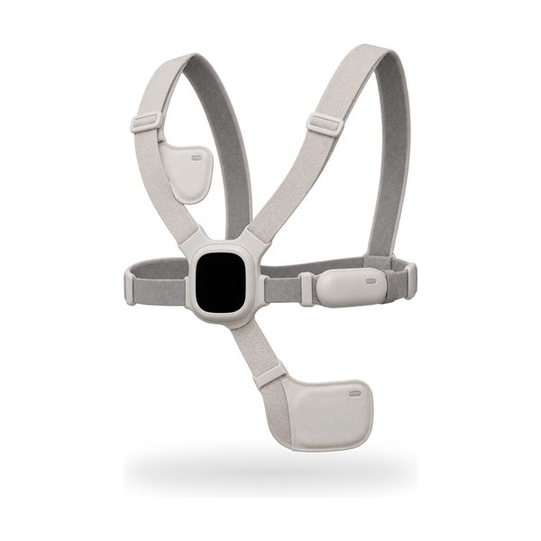</div>
        <div class="chip" style="right:6%;top:7%">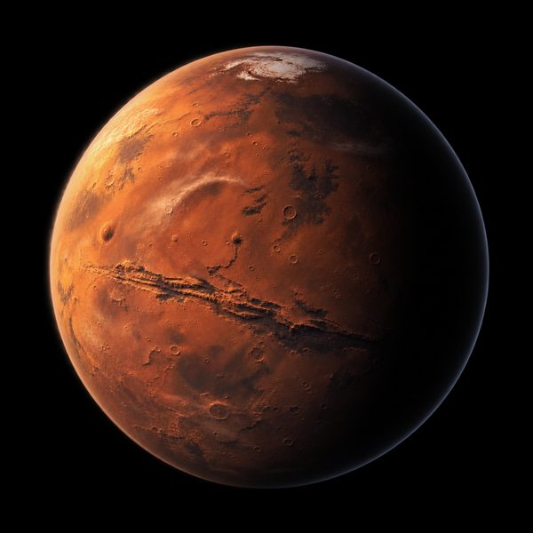</div>
        <div class="chip" style="right:12%;top:58%"></div>
        <div class="chip" style="left:38%;top:-3%">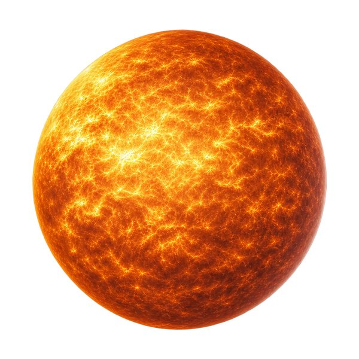</div>
        <div class="chip" style="left:30%;bottom:-5%">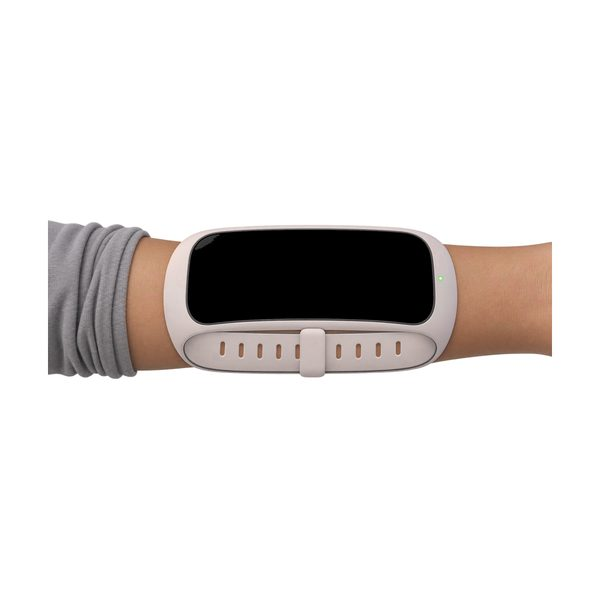</div>
        <div class="chip" style="right:30%;bottom:-4%"></div>
      </div>
      <div class="ground" id="ground">
        <div class="cab"></div>
        <div class="shade"></div>
      </div>
      <div class="copy" id="heroCopy"><h1>Eva</h1><p>Care that <b>guides</b>, <b>records</b> and <b>warns</b> on the way to Mars.</p></div>
    </div>
  </section>

  <!-- 2 · Statement -->
  <section class="space statement g" aria-labelledby="st">
    
    <p class="big" id="st" data-reveal>Fifteen passengers. <span class="mk">No doctor</span> on board. Earth up to <span class="mk">22 minutes</span> away.</p>
    <div class="row">
      <p data-reveal>Wristband<small>Large flexible touch screen, alerts, voice and the help button.</small></p>
      <p data-reveal>Chest harness<small>Non-invasive contact sensors, plus validated emergency modules.</small></p>
      <p data-reveal>Ship hub<small>Runs Eva offline. No internet, no Earth needed.</small></p>
    </div>
  </section>

  <!-- 3 · Wristband orbit + exploded -->
  <section class="pinsec xsec wsec" id="wsec" aria-labelledby="wh">
    <div class="stage">
      
      <div class="head"><p class="label" id="wh">Wristband</p><h2 class="prop">A screen big enough to follow under stress</h2></div>
      <div class="obj">
        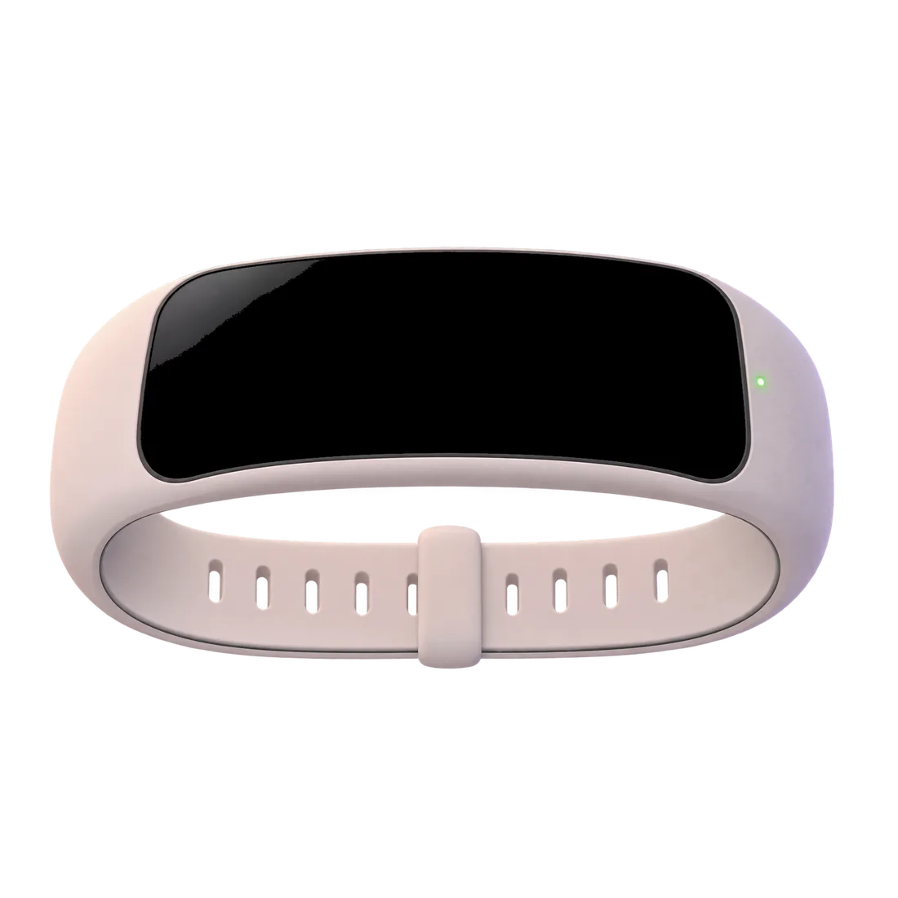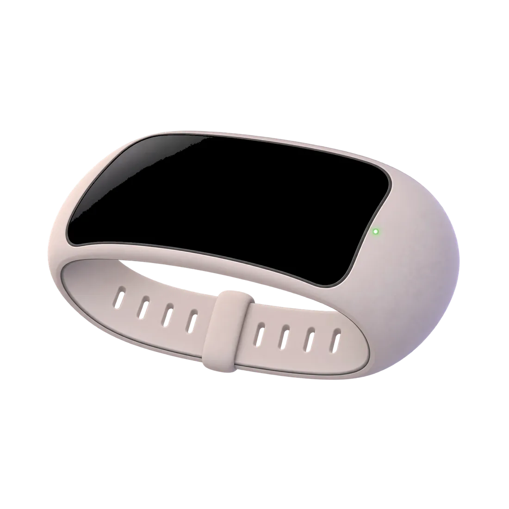
        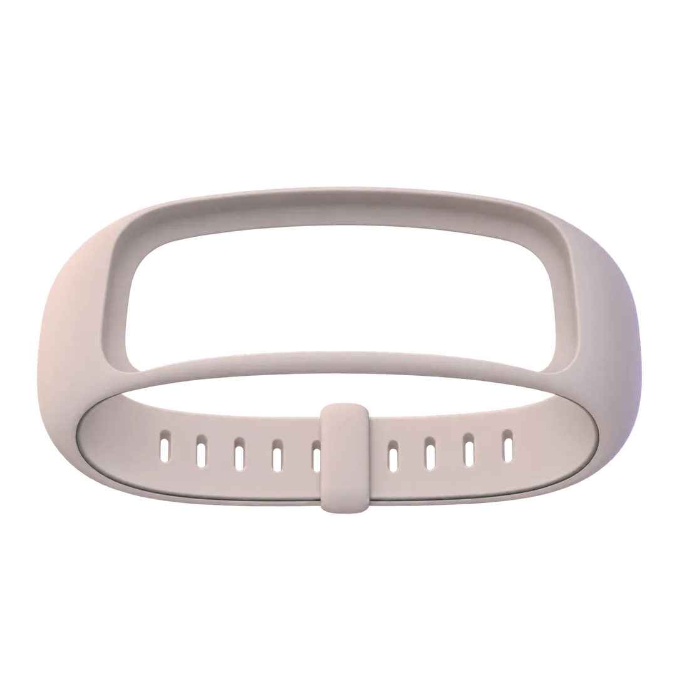
      </div>
      <div class="ledger"><div class="lbl" data-at=".6">Flexible touch screen<small>Target: ≥100 mm active side</small></div><div class="lbl" data-at=".66">Battery and board<small>Firmware runs locally</small></div><div class="lbl" data-at=".72">Strap<small>Help button, voice, vibration</small></div><div class="lbl" data-at=".78">Sensor window<small>Non-invasive, on the skin</small></div></div>
    </div>
  </section>

  <!-- 4 · Case A (pinned, text in the scene's right negative space) -->
  <section class="pinsec storyp caseA" id="caseA" aria-labelledby="ca">
    <div class="stage">
      
      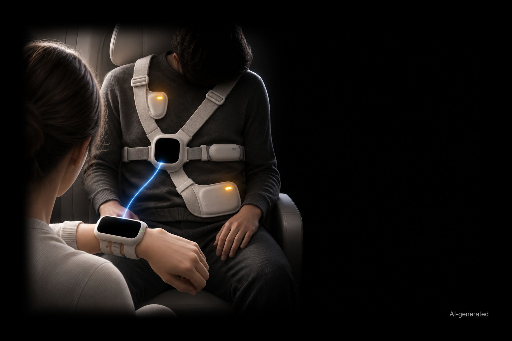
      <div class="ping" id="hlA"><i></i><span id="hlT"></span></div>
      <div class="ptxt">
        <p class="label" id="ca">Case A · Cannot act</p>
        <div class="sts">
          <div class="st" data-pt="31.8,44.5" data-tag="Harness · no response"><span class="n">01 / 04</span><h3>The harness and wristband notice no response</h3><p>Eva cross-checks independent signals before it calls anyone. Stillness alone is not an emergency.</p></div>
          <div class="st" data-pt="23.4,69.3" data-tag="Helper’s wristband"><span class="n">02 / 04</span><h3>Eva calls the nearest passenger</h3><p>Their wristband shows where to go. If they do not confirm in 20 seconds, Eva calls the next one.</p></div>
          <div class="st" data-pt="27.6,56" data-tag="Linked · step 1 of 4"><span class="n">03 / 04</span><h3>One instruction at a time</h3><p>The helper follows big pictures, voice and short text on their own wrist, linked to the patient's harness.</p></div>
          <div class="st" data-pt=""><span class="n">04 / 04</span><h3>Everyone else gets a quiet notice</h3><p>Every step, reading and decision goes into the log for the ship and for Earth.</p></div>
        </div>
        <div class="bar"><i></i></div>
      </div>
    </div>
  </section>

  <!-- 5 · Case B (pinned) -->
  <section class="pinsec storyp caseB" id="caseB" aria-labelledby="cb">
    <div class="stage">
      <div class="ptxt">
        <p class="label" id="cb">Case B · Can act</p>
        <div class="sts">
          <div class="st" data-ui="0" data-l="0"><span class="n">01 / 04</span><h3>Eva checks you can move and follow steps</h3><p>Being awake is not the same as being able to help yourself.</p></div>
          <div class="st" data-ui="1" data-l="1"><span class="n">02 / 04</span><h3>The harness lights the item you need</h3><p>The wristband shows one action; a light on the harness points to the right compartment.</p></div>
          <div class="st" data-ui="2" data-l="2"><span class="n">03 / 04</span><h3>Step by step, with voice and vibration</h3><p>Repeat and Get help stay on screen the whole time.</p></div>
          <div class="st" data-ui="3" data-l="0"><span class="n">04 / 04</span><h3>If you can't, a passenger takes over</h3><p>Eva switches to Case A and calls the nearest helper.</p></div>
        </div>
        <div class="bar"><i></i></div>
      </div>
      <div class="bdev">
        <div class="w">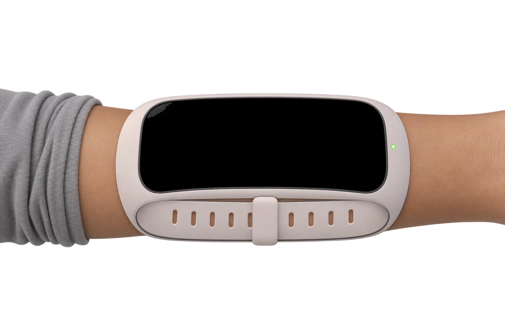<div class="scr" aria-live="polite"><div class="pict" id="uiP">?</div><div class="tx"><small id="uiK">Eva · Step 1 of 3</small><span id="uiT">Can you sit up? Tap Yes</span></div></div></div>
        <div class="h" id="harness" data-l="0">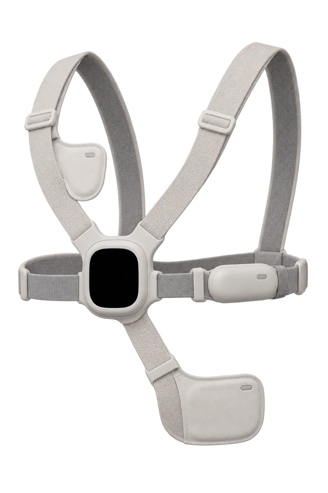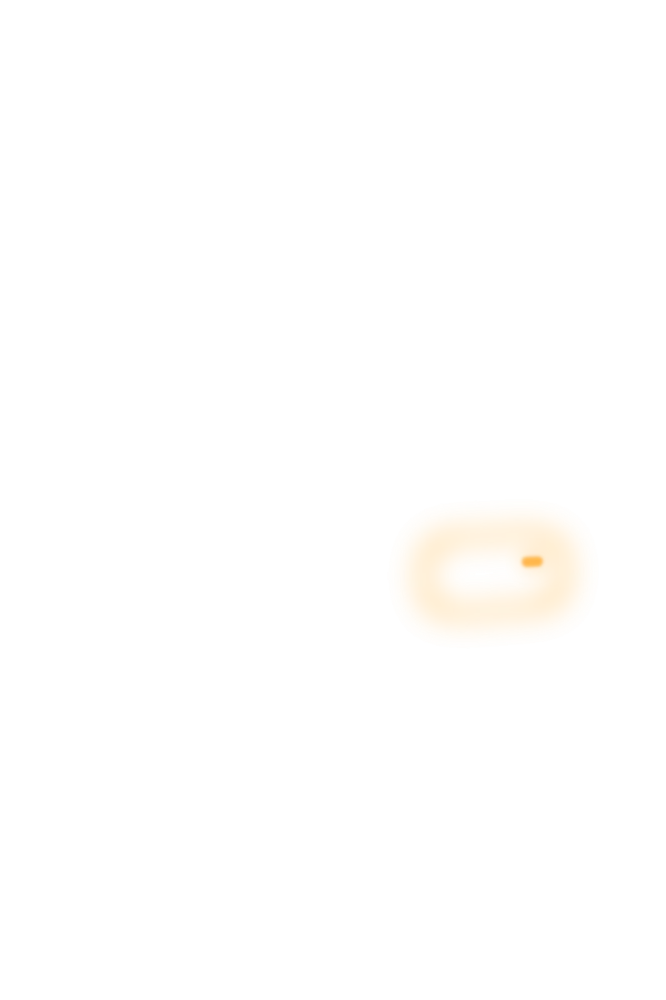</div>
      </div>
    </div>
  </section>

  <!-- 6 · Harness: close-up, then a zoom into each component -->
  <section class="pinsec xsec hsec" id="hsec" aria-labelledby="hh">
    <div class="stage">
      
      <div class="s2"></div>
      <div class="head"><p class="label" id="hh">Harness</p><h2 class="prop">Sensors on the body, help within reach</h2><p class="note">Monitoring stays non-invasive. Emergency treatment comes from validated modules, never from a chat model.</p></div>
      <div class="obj" id="hobj"><div class="cam" id="hcam">
        
        
      </div></div>
      <div class="ledger" id="hledger"><div class="lbl">Defibrillation pads<small>Validated rhythm analysis decides</small></div><div class="lbl">Core module<small>Sensors and the link to the wristband</small></div><div class="lbl">Injectable compartment<small>Route and drug still under study</small></div><div class="lbl">Status lights<small>Show the item to use</small></div></div>
    </div>
  </section>

  <!-- 7 · Solar alert (fully procedural: canvas, no images) -->
  <section class="pinsec solar" id="solar" aria-labelledby="sa">
    <div class="stage">
      <canvas id="solarCv" role="img" aria-label="Hull camera view from the spacecraft: the Sun flares and a storm of protons streams straight at the camera."></canvas>
      <canvas id="sunGL" aria-label="3D model of the Sun from NASA. Drag to rotate it."></canvas>
      <canvas id="fxCv" aria-hidden="true"></canvas>
      <canvas id="asciiCv" aria-hidden="true"></canvas>
      <div class="hud" aria-hidden="true"><i class="c c1"></i><i class="c c2"></i><i class="c c3"></i><i class="c c4"></i><div class="bar"><span>Hull cam 02 · forward</span><span class="rec" id="recT">00:00:00</span></div></div>
      <div class="meter" id="meter">Proton flux · 2 pfu</div>
      <ol class="log" id="slog">
        <li data-at=".03"><b>EVA</b>Watching NOAA GOES and NASA DONKI</li>
        <li data-at=".16" class="red"><b>GOES</b>X-ray spike · X-class flare</li>
        <li data-at=".22"><b>DONKI</b>Flare report in · energetic particles expected</li>
        <li data-at=".29" class="red"><b>EVA</b>Particles in ~18 min · alerting every wristband</li>
        <li data-at=".35"><b>BANDS</b>Acknowledged <span id="nAck">0</span>/15</li>
        <li data-at=".43"><b>EVA</b>Route lit to the storm shelter</li>
        <li data-at=".5"><b>CREW</b>In shelter <span id="nIn">0</span>/15</li>
        <li data-at=".6" class="red"><b>HULL</b>Proton storm hitting the ship</li>
        <li data-at=".76"><b>EVA</b>All 15 sheltered · dose logged per passenger</li>
      </ol>
      <button class="ascii-t" id="asciiBtn" type="button" aria-pressed="false">+ ASCII</button>
      <p class="drag" id="sunHint">Drag the Sun</p>
      <div class="txt"><p class="label" id="sa">Solar alert</p><h2>Minutes of warning before the particles arrive</h2><p class="note">Eva reads NASA DONKI flare reports and NOAA GOES proton data. X-rays arrive with the light; the particles that follow leave time to reach the shelter.</p></div>
      <div class="alvig" aria-hidden="true"></div>
      <div class="alert" role="alert"><div class="al-tape"></div><div class="al-top"><svg viewBox="0 0 100 100" aria-hidden="true"><circle cx="50" cy="50" r="48" fill="#ffd400"/><circle cx="50" cy="50" r="8" fill="#000"/><path d="M50 37 L50 12 A38 38 0 0 1 82.9 31 L60.8 43.7 A13 13 0 0 0 50 37Z" fill="#000"/><path d="M50 37 L50 12 A38 38 0 0 1 82.9 31 L60.8 43.7 A13 13 0 0 0 50 37Z" fill="#000" transform="rotate(120 50 50)"/><path d="M50 37 L50 12 A38 38 0 0 1 82.9 31 L60.8 43.7 A13 13 0 0 0 50 37Z" fill="#000" transform="rotate(240 50 50)"/></svg>RADIATION STORM<em>LIVE</em></div><b>Go to the shelter now</b><div class="al-count"><strong id="alT">18:00</strong><i id="alI">until the particles hit</i></div><span>Drop everything. Follow the arrows on your wristband.</span></div>
    </div>
  </section>

  <!-- 8 · Earth link -->
  <section class="pinsec link-sec" id="linkSec" aria-labelledby="el">
    <div class="stage">
      
      <div class="head"><div><p class="label" id="el">Earth link</p><h2 class="prop" style="max-width:12em">Every step recorded, even minutes from Earth</h2></div><p class="lt" id="lt">3 min<small>one-way light time to Earth</small></p></div>
      <div class="playhead" aria-hidden="true"></div>
      <div class="track" id="track">
        <div class="tline" id="tline"><i></i><b></b></div>
        <div class="planet">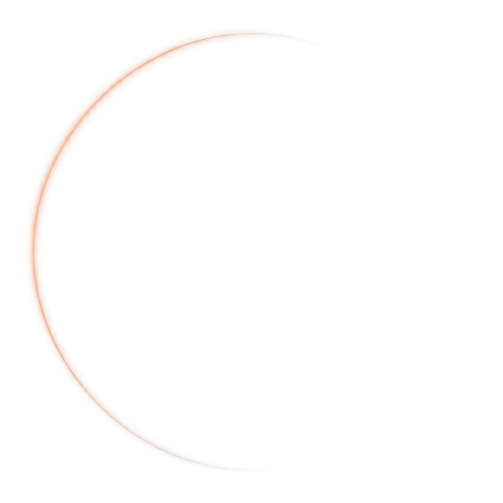</div>
        <div class="packet"><b>12:01:04</b><span>No response · passenger 07</span></div>
        <div class="packet"><b>12:01:05</b><span>Helper assigned · passenger 03</span></div>
        <div class="packet"><b>ECG strip</b><span>Signed, chained, queued</span></div>
        <div class="packet"><b>Step 2 done</b><span>Breathing checked</span></div>
        <div class="packet"><b>ACK</b><span>Received on Earth</span></div>
        <div class="planet">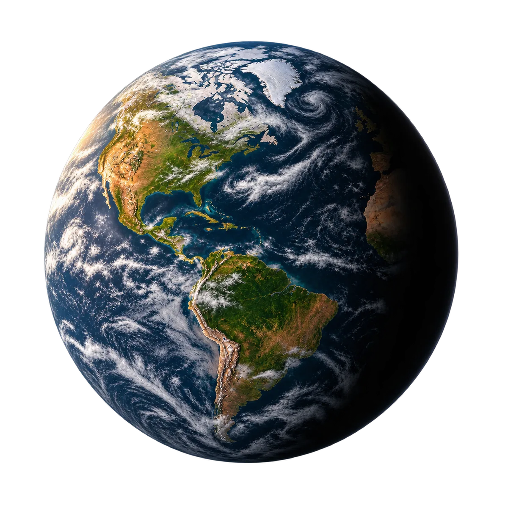</div>
      </div>
    </div>
  </section>

  <!-- 9 · Mars arrival -->
  <section class="arrive" id="arrive" aria-label="Arrival">
    <div class="stage"><div class="dots"></div><p class="cap prop">Arrive with every step on record.</p></div>
  </section>

  <!-- 10 · Why -->
  <section class="g" aria-labelledby="why" style="margin-top:96px">
    <div class="sh"><h2 id="why">Why it matters</h2></div>
    <div class="ed" data-reveal>
      <p class="prop">Care that does not wait for a doctor</p>
      <div class="body">
        <p>Around 70% of astronauts on six-to-twelve-month missions aboard the ISS show significant vision changes, and 85% of 71 astronauts reported at least one nasal or sinus problem. On a commercial flight to Mars most passengers will not be clinicians, and Earth may be twenty minutes away by radio.</p>
        <p>We built Eva on NASA's open Inspiration4 data (OSDR OSD-575 and OSD-569). Against each crew member's own baseline, the metabolic panel the day after landing showed 16 of 72 changes, against 7 with standard laboratory ranges.</p>
        <p>Eva guides, records and warns. Shocks and injections belong to validated subsystems, never to a chat model.</p>
      </div>
    </div>
  </section>

  <!-- 11 · Slabs -->
  <section aria-labelledby="kit">
    <div class="g"><div class="sh"><h2 id="kit">WearMeds</h2></div></div>
    <div class="slabs">
      <article class="slab g" data-slab>
        <div><p class="name">Wristband</p><div class="specs"><div>Screen<span>Flexible touch, target ≥100 mm active side</span></div><div>Talks to<span>Ship hub over LoRa</span></div><div>Always on<span>Help button, voice, vibration</span></div></div></div>
        <div class="pic">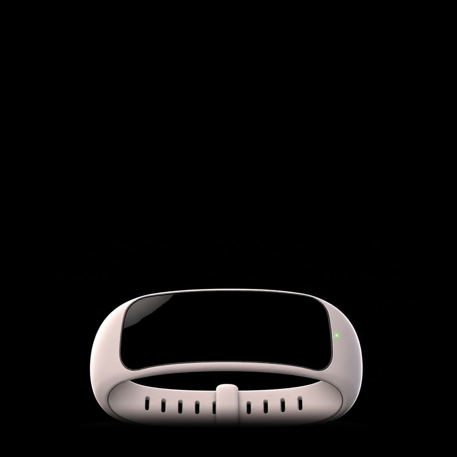</div>
      </article>
      <article class="slab dark g" data-slab>
        <div><p class="name">Harness</p><div class="specs"><div>Sensors<span>Contact, non-invasive</span></div><div>Modules<span>Defibrillation, emergency injectable</span></div><div>Guides<span>Lights the item to use</span></div></div></div>
        <div class="pic"></div>
      </article>
      <article class="slab g" data-slab>
        <div><p class="name">Ship hub</p><div class="specs"><div>Runs<span>Eva's medical AI, offline</span></div><div>Keeps<span>The signed log of every step</span></div><div>Sends<span>Queued reports to Earth</span></div></div></div>
        <div class="pic"></div>
      </article>
    </div>
    <div class="g"><div class="parts" id="parts">
      <div class="part-card"><div class="im"></div><b>Screen</b><span>Wristband</span></div>
      <div class="part-card"><div class="im"></div><b>Battery and board</b><span>Wristband</span></div>
      <div class="part-card"><div class="im">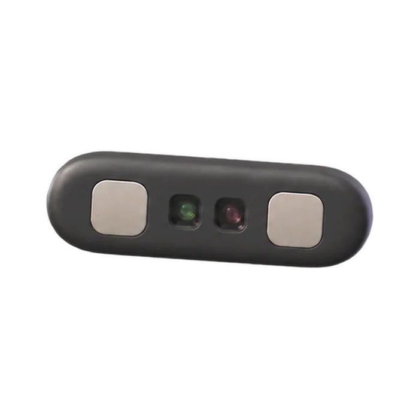</div><b>Sensor window</b><span>Wristband</span></div>
      <div class="part-card"><div class="im"></div><b>Defibrillation pads</b><span>Harness</span></div>
      <div class="part-card"><div class="im"></div><b>Core module</b><span>Harness</span></div>
      <div class="part-card"><div class="im"></div><b>Injectable compartment</b><span>Harness</span></div>
    </div></div>
  </section>

  <!-- 12 · Business -->
  <section class="g" aria-labelledby="model">
    <div class="sh"><h2 id="model">Business</h2></div>
    <div class="ed" data-reveal>
      <p class="prop">Hardware once, Eva every mission</p>
      <div class="body">
        <p>Operators buy a WearMeds kit for each passenger and run Eva on the ship hub, licensed per mission.</p>
        <p>Bands come in sizes and finishes, the harness takes new validated modules, and the same platform serves orbital stays, lunar bases and remote work on Earth.</p>
      </div>
    </div>
  </section>

  <section class="g team-sec" aria-label="Team"><div id="team"></div></section>

  <section class="g close" id="contact" aria-labelledby="inv">
    <div class="sh"><h2>Contact</h2></div>
    <p id="inv">To see Eva working or to discuss a mission, start here:</p>
    <ul>
      <li><a href="https://claude.ai/artifact/DjrUadizcmVevJFVpCqR4m">Open the prototype <svg viewBox="0 0 46 46" aria-hidden="true"><path d="M10 36 36 10M14 10h22v22" fill="none" stroke="currentColor" stroke-width="3"/></svg></a></li>
      <li><a href="https://claude.ai/artifact/CXQN7Fn7UWVp6gWXPRfgAK">Read the research <svg viewBox="0 0 46 46" aria-hidden="true"><path d="M10 36 36 10M14 10h22v22" fill="none" stroke="currentColor" stroke-width="3"/></svg></a></li>
    </ul>
  </section>
</main>

<footer class="foot g" id="foot">
  <p class="notice" id="ai">All images are AI-generated concept art made with an OpenAI image model through Codex, from prompts by team Sanjo-X written with Claude. They contain no NASA insignia or branding. The 3D Sun is NASA's free model from NASA 3D Resources. Eva is a concept for NASA Space Apps Challenge 2026 and is not a medical device.</p>
  <div class="mark"><svg viewBox="0 0 1400 120" role="img" aria-label="Eva by WearMeds"><text x="0" y="104" textLength="1400" lengthAdjust="spacingAndGlyphs" fill="currentColor" font-family="PP Neue Montreal, Inter, Arial, sans-serif" font-size="132">Eva by WearMeds</text></svg></div>
  <div class="util"><span>© 2026 Sanjo-X · Space Apps Rosario</span><ul><li><a class="u" href="#ai">AI notice</a></li><li><a class="u" href="https://ccmc.gsfc.nasa.gov/tools/DONKI/">Data sources</a></li></ul></div>
</footer>

<script src="https://cdnjs.cloudflare.com/ajax/libs/three.js/r128/three.min.js"></script>
<script src="team-rail.js"></script>
<script>
(()=>{
const reduce=matchMedia('(prefers-reduced-motion: reduce)').matches;
/* theme picker: remembers the choice per viewer; with no choice the page follows the system light/dark */
{const names={light:'Mono light',dark:'Mono dark',blue:'Clinical blue',mars:'Mission orange',lime:'Editorial lime'}, btns=[...document.querySelectorAll('.tpick button')], tn=document.getElementById('tname'), root=document.documentElement;
  let cur=null; try{cur=localStorage.getItem('wm-theme')}catch(e){}
  const sysDark=()=>matchMedia('(prefers-color-scheme: dark)').matches;
  const apply=(t,save)=>{if(t)root.dataset.theme=t;else delete root.dataset.theme; const eff=t||(sysDark()?'dark':'light');
    btns.forEach(b=>b.setAttribute('aria-checked',String(b.dataset.t===eff))); tn.textContent=names[eff];
    if(save){try{localStorage.setItem('wm-theme',t)}catch(e){}} if(window.__measureAll)__measureAll()};
  apply(names[cur]?cur:null,false); btns.forEach(b=>b.addEventListener('click',()=>apply(b.dataset.t,true)))}
const clamp=(v,a=0,b=1)=>Math.max(a,Math.min(b,v));
const io2=t=>t<.5?2*t*t:1-Math.pow(-2*t+2,2)/2, ic3=t=>t<.5?4*t*t*t:1-Math.pow(-2*t+2,3)/2, oc3=t=>1-Math.pow(1-t,3);
const docTop=el=>{let y=0;for(let n=el;n;n=n.offsetParent)y+=n.offsetTop;return y};
const V=()=>innerHeight, NAV=72;
const scenes=[], measures=[]; let ticking=false;
const add=f=>scenes.push(f), onMeasure=f=>measures.push(f);
function frame(){ticking=false;const y=scrollY;for(const s of scenes)s(y)}
function req(){if(!ticking){ticking=true;requestAnimationFrame(frame)}}
addEventListener('scroll',req,{passive:true});
/* pinned progress helper */
function pinP(sec,y){const st=sec.querySelector('.stage');const len=sec.offsetHeight-st.offsetHeight;return reduce?1:clamp((y-sec._top+NAV)/(len||1))}
const pins=[...document.querySelectorAll('.pinsec')]; onMeasure(()=>pins.forEach(s=>s._top=docTop(s)));

/* 1 · Hero */
const hero=document.getElementById('hero'), hst=hero.querySelector('.stage'), ground=document.getElementById('ground'), copy=document.getElementById('heroCopy');
const chips=[...hero.querySelectorAll('.chip')]; let H={};
onMeasure(()=>{const sw=hst.clientWidth, sh=hst.clientHeight; const cw=sw<700?sw*.88:Math.min(sw*.56,720), ch=Math.min(sh-120,560); H={L:(sw-cw)/2,T:(sh-ch)/2,sw};
  chips.forEach(c=>c.style.setProperty('--k',0));
  const s=hst.getBoundingClientRect(), cx=sw/2, cy=sh/2;
  chips.forEach((c,i)=>{const r=c.getBoundingClientRect();const tx=r.left-s.left+r.width/2-cx,ty=r.top-s.top+r.height/2-cy,d=Math.hypot(tx,ty)||1;c.style.setProperty('--fx',(tx/d*sw*.55).toFixed(1)+'px');c.style.setProperty('--fy',(ty/d*sh*.55).toFixed(1)+'px');c.style.setProperty('--turn',(i%2?-8:9)+'deg')})});
add(y=>{const p=pinP(hero,y), s=reduce?1:io2(clamp((p-.02)/.45)), k=reduce?1:clamp(p/.55)**1.6, q=reduce?0:clamp((p-.5)/.5);
  const it=H.T*(1-s), il=H.L*(1-s);
  ground.style.setProperty('--it',it+'px');ground.style.setProperty('--ib',it+'px');ground.style.setProperty('--il',il+'px');ground.style.setProperty('--ir',il+'px');
  hst.style.setProperty('--s',clamp((s-.5)/.5).toFixed(3));hst.style.setProperty('--q',q.toFixed(3));
  const sw=H.sw; copy.style.setProperty('--cl',(il+(sw<700?20:40)*(1-s)+20*s)+'px');copy.style.width=Math.min(560,Math.max(220,sw-2*il-(sw<700?40:80)))+'px';
  chips.forEach(c=>c.style.setProperty('--k',k.toFixed(3)))});

/* hero deep space: a starfield in three depths that slides against the cursor (near stars move most) and drifts slowly outward,
   while the chips stay put and surface like meteors: each fades in out of blur, holds, and fades away on its own clock */
let mx=0,my=0,heroOn=true,skyRun=false,skyLast=0;
addEventListener('pointermove',e=>{if(e.pointerType==='touch')return;mx=e.clientX/innerWidth*2-1;my=e.clientY/innerHeight*2-1},{passive:true});
const sky=document.getElementById('heroSky'), kx=sky.getContext('2d'); let skyStars=[], skyW=0, skyH=0, skyRGB='12,12,12';
function skySize(){const r=Math.min(2,devicePixelRatio||1);skyW=sky.clientWidth;skyH=sky.clientHeight;sky.width=skyW*r;sky.height=skyH*r;kx.setTransform(r,0,0,r,0,0);
  skyRGB=getComputedStyle(document.documentElement).getPropertyValue('--star').trim()||'12,12,12';
  if(!skyStars.length)for(let i=0;i<420;i++){const z=Math.random();skyStars.push({x:Math.random()-.5,y:Math.random()-.5,z:.15+z*.85,t:Math.random()*6.28,s:z>.92?2:z>.6?1.4:1})}}
onMeasure(skySize);
const meteors=chips.map((c,i)=>({el:c,ph:0,t0:-(i*1.3+Math.random()*2),fin:1.1+Math.random()*.8,hold:2.6+Math.random()*3.4,fout:1.2+Math.random()*.9,gap:.6+Math.random()*2.4}));
function skyTick(now){const t=now/1000, dt=skyLast?Math.min(.05,t-skyLast):.016; skyLast=t;
  kx.clearRect(0,0,skyW,skyH); const cx=skyW/2, cy=skyH/2;
  for(const st of skyStars){st.x*=1+dt*.012*st.z; st.y*=1+dt*.012*st.z; if(Math.abs(st.x)>.6||Math.abs(st.y)>.6){st.x=(Math.random()-.5)*.2;st.y=(Math.random()-.5)*.2}
    const X=cx+st.x*skyW-pmx*70*st.z*st.z, Y=cy+st.y*skyH-pmy*50*st.z*st.z, a=(.25+.75*st.z)*(.55+.45*Math.sin(t*(.6+st.z)+st.t));
    kx.fillStyle=`rgba(${skyRGB},${a.toFixed(3)})`; kx.fillRect(X,Y,st.s,st.s)}
  for(const m of meteors){const T=m.fin+m.hold+m.fout+m.gap; let u=((t-m.t0)%T+T)%T, o;
    o=u<m.fin?u/m.fin:u<m.fin+m.hold?1:u<m.fin+m.hold+m.fout?1-(u-m.fin-m.hold)/m.fout:0; o=o*o*(3-2*o);
    m.el.style.setProperty('--mo',o.toFixed(3))}
  if(heroOn)requestAnimationFrame(skyTick);else{skyRun=false;skyLast=0}}
add(y=>{heroOn=pinP(hero,y)<.9; if(heroOn&&!skyRun){skyRun=true;requestAnimationFrame(skyTick)}});

/* pointer → smoothed --pmx/--pmy on :root (stars and cabin layers read them by depth) */
let pmx=0,pmy=0,pRun=false; const rootS=document.documentElement.style;
function pTick(){pmx+=(mx-pmx)*.07;pmy+=(my-pmy)*.07;rootS.setProperty('--pmx',pmx.toFixed(4));rootS.setProperty('--pmy',pmy.toFixed(4));
  if(Math.abs(mx-pmx)>.001||Math.abs(my-pmy)>.001)requestAnimationFrame(pTick);else pRun=false}
if(!reduce)addEventListener('pointermove',e=>{if(e.pointerType==='touch')return;if(!pRun){pRun=true;requestAnimationFrame(pTick)}},{passive:true});

/* reveals */
const rev=[...document.querySelectorAll('[data-reveal]')];
if(!reduce)rev.forEach(el=>{if(el.getBoundingClientRect().top>innerHeight)el.classList.add('pre')});
add(()=>{const lim=innerHeight*.88;for(const el of rev)if(!el.classList.contains('in')&&el.getBoundingClientRect().top<lim){el.classList.remove('pre');el.classList.add('in')}});

/* labels helper for exploded scenes */
function labels(stage,p){stage.querySelectorAll('.lbl').forEach(l=>l.style.setProperty('--lo',clamp((p-+l.dataset.at)/.06).toFixed(3)))}

/* 3 · Wristband orbit + exploded */
const ws=document.getElementById('wsec'), wst=ws.querySelector('.stage'), orbs=[...ws.querySelectorAll('.orb')], wparts=[...ws.querySelectorAll('.part')], wstep={set textContent(v){}};
wparts.forEach(pp=>{pp.style.setProperty('--dy',(+pp.dataset.dy||0)+'%')});
let orbitT=0, orbitPlaying=false, orbitDone=false, lastWP=0;
function drawOrbit(){const o=orbitT*4, k=Math.min(3,Math.floor(o)), f=o-k, blur=(reduce?0:Math.sin(Math.PI*f)*7), dx=Math.sin(Math.PI*f)*2.2;
  orbs.forEach((im,i)=>{let a=0; if(i===k)a=1-f; else if(i===k+1)a=f; if(orbitT>=1)a=(i===2)?1:0;
    im.style.opacity=a.toFixed(3); im.style.filter=a>0&&a<1?`blur(${blur.toFixed(1)}px)`:'none'; im.style.transform=a>0&&a<1?`translateX(${(i===k?-dx:dx).toFixed(2)}%)`:'none'})}
function playOrbit(){if(orbitPlaying||orbitDone)return; if(reduce){orbitT=1;orbitDone=true;drawOrbit();return}
  orbitPlaying=true; const t0=performance.now(), D=2200;
  const step=now=>{const t=clamp((now-t0)/D); orbitT=io2(t); drawOrbit(); if(t<1&&!orbitDone)requestAnimationFrame(step); else {orbitPlaying=false; orbitDone=true; orbitT=1; drawOrbit(); req()}};
  requestAnimationFrame(step)}
add(y=>{const p=pinP(ws,y); lastWP=p;
  if(p>0.005&&!orbitDone)playOrbit();               // autoplay the turn as soon as the scene pins
  if(p<=0.001&&orbitDone){orbitDone=false;orbitT=0;drawOrbit()} // replay when scrolled back above
  if(p>.36&&!orbitDone){orbitDone=true;orbitT=1;drawOrbit()}
  const showParts=orbitDone&&p>.3, toParts=showParts?clamp((p-.3)/.06):0;
  if(showParts&&toParts>0)orbs.forEach(im=>{im.style.opacity=(+(im===orbs[2])*(1-toParts)).toFixed(3)});
  const e=reduce?1:ic3(clamp((p-.4)/.3));
  wparts.forEach(pp=>{pp.style.opacity=toParts.toFixed(3);pp.style.setProperty('--e',e.toFixed(3))});
  labels(wst,p);
  wstep.textContent=!orbitDone?'Turning':p<.36?'Assembled':'Exploded view';
});
drawOrbit();

/* 4–5 · pinned step scenes */
function steps(id,onStep){const sec=document.getElementById(id), st=sec.querySelector('.stage'), sts=[...sec.querySelectorAll('.st')], bar=sec.querySelector('.bar'); let cur=-2;
  add(y=>{const p=pinP(sec,y), n=sts.length; const i=Math.min(n-1,Math.floor(p*n*0.999)); bar.style.setProperty('--sp',p.toFixed(3));
    if(i!==cur){cur=i;sts.forEach((e,k)=>e.classList.toggle('on',k===i));onStep(i,sts[i],st)}});
  return ()=>{if(cur>=0)onStep(cur,sts[cur],st)}}
const hlA=document.getElementById('hlA');
function coverPt(stage,pt){const img=[...stage.querySelectorAll('.sc')].find(i=>i.offsetParent!==null&&i.naturalWidth); if(!img||!pt)return null;
  const W=img.clientWidth,H=img.clientHeight,iw=img.naturalWidth,ih=img.naturalHeight,sc=Math.max(W/iw,H/ih);
  const pos=getComputedStyle(img).objectPosition.split(' ').map(v=>parseFloat(v)/100); const ox=img.offsetLeft+(W-iw*sc)*pos[0], oy=img.offsetTop+(H-ih*sc)*pos[1];
  const [x,y]=pt.split(',').map(Number); return [ox+x/100*iw*sc, oy+y/100*ih*sc]}
const hlT=document.getElementById('hlT');
const redoA=steps('caseA',(i,st,stage)=>{const r=coverPt(stage,st.dataset.pt);
  if(!r){hlA.style.setProperty('--ho',0);return} hlA.style.setProperty('--hx',r[0]+'px');hlA.style.setProperty('--hy',r[1]+'px');hlT.textContent=st.dataset.tag||'';hlA.style.setProperty('--ho',1)});
onMeasure(redoA); document.querySelectorAll('#caseA .sc').forEach(i=>i.addEventListener('load',redoA));
const UI=[["?","Eva · Step 1 of 3","Can you sit up? Tap Yes"],["→","Eva · Step 2 of 3","Open the lit compartment on your harness"],["1","Eva · Step 3 of 3","Follow the picture. Say Repeat anytime"],["!","Eva · Calling help","Passenger 03 is on the way"]];
const uiP=document.getElementById('uiP'),uiK=document.getElementById('uiK'),uiT=document.getElementById('uiT'),harness=document.getElementById('harness');
steps('caseB',(i,st)=>{const u=UI[Math.max(0,i)];uiT.style.opacity=0;setTimeout(()=>{uiP.textContent=u[0];uiK.textContent=u[1];uiT.textContent=u[2];uiT.style.opacity=1},reduce?0:180);harness.dataset.l=st?st.dataset.l:'0'});

/* 6 · Harness: zoom into each component (part centres measured on the shared canvas) */
const hs=document.getElementById('hsec'), hstg=hs.querySelector('.stage'), hobj=document.getElementById('hobj'), hcam=document.getElementById('hcam'), hstep={set textContent(v){}};
const hl=[...document.querySelectorAll('#hledger .lbl')], gPads=hs.querySelector('.gpads'), gComp=hs.querySelector('.gcomp');
// [p, centreX, centreY, zoom] — centres in fractions of the 2:3 canvas
const KF=[[.26,.5,.5,1],[.34,.24,.343,2.6],[.44,.24,.343,2.6],[.5,.358,.567,2.7],[.6,.358,.567,2.7],[.66,.74,.575,2.8],[.74,.74,.575,2.8],[.8,.5,.5,1.05],[.88,.5,.5,1.05],[.95,.5,.5,1]];
const NAMES=['Assembled','Defibrillation pads','Core module','Injectable compartment','Status lights','Ready'];
function camAt(p){if(p<=KF[0][0])return KF[0];for(let i=0;i<KF.length-1;i++){const a=KF[i],b=KF[i+1];if(p<=b[0]){const t=io2(clamp((p-a[0])/(b[0]-a[0])));return [p,a[1]+(b[1]-a[1])*t,a[2]+(b[2]-a[2])*t,a[3]+(b[3]-a[3])*t]}}return KF[KF.length-1]}
add(y=>{const p=pinP(hs,y); const z=reduce?1:io2(clamp((p-.06)/.18)); hstg.style.setProperty('--z',z.toFixed(3)); hobj.style.opacity=z.toFixed(3);
  const [,cx,cy,zs]=reduce?[0,.5,.5,1]:camAt(p); const W=hobj.clientWidth,H=hobj.clientHeight;
  hcam.style.setProperty('--zs',zs.toFixed(3)); hcam.style.setProperty('--tx',(W/2-cx*W*zs).toFixed(1)+'px'); hcam.style.setProperty('--ty',(H/2-cy*H*zs).toFixed(1)+'px');
  const k=p<.3?-1:p<.47?0:p<.63?1:p<.77?2:p<.91?3:4;
  hl.forEach((l,i)=>l.style.setProperty('--lo',(k===i||k===4)?1:0));
  gPads.style.opacity=(k===0||k>=3)?1:0; gComp.style.opacity=(k===2||k>=3)?1:0;
  hstep.textContent=p<.24?'Close-up':NAMES[k+1];
});

/* 7 · Solar alert — hull-camera POV. The Sun sits dead ahead; its rays and a proton storm come straight at the lens.
   Scroll drives the story (calm → flare → alert → storm → explanation); the particles, hits and shake run in real time. */
const so=document.getElementById('solar'), sst=so.querySelector('.stage'), meter=document.getElementById('meter'), sc=document.getElementById('solarCv'), g=sc.getContext('2d'), fx=document.getElementById('fxCv'), fg=fx.getContext('2d');
const slogItems=[...document.querySelectorAll('#slog li')], nAck=document.getElementById('nAck'), nIn=document.getElementById('nIn'), alT=document.getElementById('alT'), alI=document.getElementById('alI'), alB=so.querySelector('.alert b'), alS=so.querySelector('.alert > span');
let SP=0, SI=0, SF=0, SD=0, sRun=false, sVis=false, SG=null, sStars=[], prot=[], hits=[], shx=0, shy=0, sLast=0, spawnAcc=0, hitAcc=0;
const srand=(()=>{let a=1234567;return()=>{a=(a*1664525+1013904223)>>>0;return a/4294967296}})(), TAU=Math.PI*2;
const beams=Array.from({length:60},(_,i)=>({a:i/60*TAU+srand()*.08,w:.004+srand()*.014,l:.55+srand()*.45,o:.4+srand()*.6,f:srand()*6}));
function solarMeasure(){const r=Math.min(2,devicePixelRatio||1);[sc,fx].forEach(c=>{c.width=c.clientWidth*r;c.height=c.clientHeight*r});g.setTransform(r,0,0,r,0,0);fg.setTransform(r,0,0,r,0,0);
  const w=sc.clientWidth,h=sc.clientHeight,narrow=w<760;
  const R=narrow?Math.min(w*.24,h*.15):Math.min(h*.17,w*.13);
  SG={w,h,R,cx:w*.5,cy:narrow?h*.42:h*.46};
  if(!sStars.length)for(let i=0;i<320;i++)sStars.push({x:srand(),y:srand(),z:.2+srand()*.8,t:srand()*6.28})}
onMeasure(solarMeasure);
function solarFrame(now){const t=now/1000, Gm=SG; if(!Gm){sRun=false;return}
  const dt=sLast?Math.min(.05,t-sLast):.016; sLast=t;
  const {w,h,R,cx,cy}=Gm, I=SI, F=SF;
  const px=+(getComputedStyle(document.documentElement).getPropertyValue('--pmx')||0), py=+(getComputedStyle(document.documentElement).getPropertyValue('--pmy')||0);
  // camera shake: the hull camera rattles with the storm and the flash
  const amp=reduce?0:(I*I*9+F*12); shx+=((Math.random()-.5)*2*amp-shx)*.55; shy+=((Math.random()-.5)*2*amp-shy)*.55;
  sst.style.setProperty('--shx',shx.toFixed(1)+'px'); sst.style.setProperty('--shy',shy.toFixed(1)+'px');
  // background: stars, solar glow and rays fanning out from the Sun toward the camera
  g.globalCompositeOperation='source-over'; g.fillStyle='#000'; g.fillRect(0,0,w,h);
  for(const st of sStars){const a=.35+.65*(.5+.5*Math.sin(t*1.3*st.z+st.t));g.fillStyle=`rgba(255,255,255,${(a*st.z*.85*(1-F*.8)).toFixed(3)})`;g.fillRect(st.x*w-px*20*st.z,st.y*h-py*14*st.z,st.z>.8?1.6:1,st.z>.8?1.6:1)}
  const sR=R*(1+.1*I+.05*F), X=cx-px*14, Y=cy-py*10, diag=Math.hypot(w,h); SG.sun={X,Y,sR,k:1};
  g.globalCompositeOperation='lighter';
  const gl=g.createRadialGradient(X,Y,sR*.9,X,Y,sR*(4+3*F+2*I));gl.addColorStop(0,`rgba(255,190,110,${.5+.4*F})`);gl.addColorStop(.3,`rgba(255,120,50,${.18+.2*F+.1*I})`);gl.addColorStop(1,'rgba(255,80,20,0)');
  g.fillStyle=gl;g.fillRect(0,0,w,h);
  const bg=g.createRadialGradient(X,Y,sR*.95,X,Y,diag*.9);bg.addColorStop(0,'rgba(255,215,160,.9)');bg.addColorStop(.25,'rgba(255,160,90,.35)');bg.addColorStop(1,'rgba(255,120,60,0)');g.fillStyle=bg;
  for(const b of beams){const a=b.a+t*.015, len=diag*b.l*(.75+.25*Math.sin(t*.8+b.f)), wa=b.w*(1+F*.8);
    g.globalAlpha=Math.min(1,(.06+.08*b.o)*(1+3*F+1.6*I)*(.7+.3*Math.sin(t*2.3+b.f*3)));
    g.beginPath();g.moveTo(X+Math.cos(a)*sR*.96,Y+Math.sin(a)*sR*.96);g.lineTo(X+Math.cos(a-wa)*len,Y+Math.sin(a-wa)*len);g.lineTo(X+Math.cos(a+wa)*len,Y+Math.sin(a+wa)*len);g.closePath();g.fill()}
  g.globalAlpha=1; g.globalCompositeOperation='source-over';
  // foreground (screen-blended over the Sun): protons, sensor hits, glare, lens ghosts, flash
  fg.clearRect(0,0,w,h); fg.globalCompositeOperation='lighter'; fg.lineCap='round';
  spawnAcc+=(reduce?.3:1)*(14+1300*I*I+60*F)*dt;
  while(spawnAcc>=1&&prot.length<2400){spawnAcc--;const a=Math.random()*TAU, rr=Math.sqrt(Math.random())*.95;
    prot.push({x:Math.cos(a)*rr,y:Math.sin(a)*rr,z:1,v:(.32+.6*Math.random())*(.7+.9*I),sp:(Math.random()-.5)*.8,w:Math.random()})}
  if(spawnAcc>1)spawnAcc=0;
  const keep=[];
  for(const q of prot){q.z-=q.v*dt; const ang=q.sp*q.v*dt, c=Math.cos(ang), s2=Math.sin(ang), nx=q.x*c-q.y*s2; q.y=q.x*s2+q.y*c; q.x=nx;
    const k0=.9/Math.max(q.z,.02), x0=X+q.x*sR*k0, y0=Y+q.y*sR*k0;
    if(q.z<.045){if(x0>0&&x0<w&&y0>0&&y0<h)hits.push({x:x0,y:y0,l:.05+Math.random()*.1,L:6+Math.random()*26,a:Math.random()*TAU,big:Math.random()<.12});continue}
    if(x0<-60||x0>w+60||y0<-60||y0>h+60)continue; keep.push(q);
    const z1=Math.min(1,q.z+q.v*.075), k1=.9/z1, x1=X+q.x*sR*k1, y1=Y+q.y*sR*k1;
    const lw=Math.min(5,.2/q.z), a=Math.min(1,(1-q.z)*1.7)*(.5+.5*q.w);
    if(q.z<.3){fg.strokeStyle=`rgba(255,120,70,${(a*.3).toFixed(3)})`;fg.lineWidth=lw*3.2;fg.beginPath();fg.moveTo(x1,y1);fg.lineTo(x0,y0);fg.stroke()}
    fg.strokeStyle=`rgba(255,${225+Math.round(30*q.w)},${200+Math.round(55*q.w)},${a.toFixed(3)})`;fg.lineWidth=lw;fg.beginPath();fg.moveTo(x1,y1);fg.lineTo(x0,y0);fg.stroke()}
  prot=keep;
  // radiation hits on the camera sensor: white specks and streaks with colour fringing, like real particle strikes on a CCD
  hitAcc+=(reduce?.2:1)*(70*I*I+8*F)*dt; while(hitAcc>=1){hitAcc--;hits.push({x:Math.random()*w,y:Math.random()*h,l:.04+Math.random()*.1,L:3+Math.random()*30,a:Math.random()*TAU,big:Math.random()<.06})}
  hits=hits.filter(hh=>(hh.l-=dt)>0);
  for(const hh of hits){const al=Math.min(1,hh.l*14), ex=Math.cos(hh.a)*hh.L, ey=Math.sin(hh.a)*hh.L;
    if(hh.big){const bl=fg.createRadialGradient(hh.x,hh.y,0,hh.x,hh.y,48);bl.addColorStop(0,`rgba(255,255,255,${.7*al})`);bl.addColorStop(.3,`rgba(255,120,90,${.25*al})`);bl.addColorStop(1,'rgba(255,60,40,0)');fg.fillStyle=bl;fg.fillRect(hh.x-48,hh.y-48,96,96)}
    for(const [dx,col] of [[-1.6,'255,40,40'],[1.6,'60,130,255'],[0,'255,255,255']]){fg.strokeStyle=`rgba(${col},${al})`;fg.lineWidth=dx?1.2:1.6;fg.beginPath();fg.moveTo(hh.x+dx,hh.y);fg.lineTo(hh.x+dx+ex,hh.y+ey);fg.stroke()}
    fg.fillStyle=`rgba(255,255,255,${al})`;fg.fillRect(hh.x-1.5,hh.y-1.5,3,3)}
  // glare straight into the lens, an anamorphic streak and lens ghosts on the axis through the frame centre
  const gr=fg.createRadialGradient(X,Y,0,X,Y,sR*(1.4+1.8*F+.4*I));gr.addColorStop(0,`rgba(255,245,225,${.12+.6*F+.08*I})`);gr.addColorStop(1,'rgba(255,200,140,0)');fg.fillStyle=gr;fg.fillRect(0,0,w,h);
  fg.save();fg.translate(X,Y);fg.scale(1,.014);const an=fg.createRadialGradient(0,0,0,0,0,w*.6);an.addColorStop(0,`rgba(160,195,255,${.35+.5*F+.15*I})`);an.addColorStop(1,'rgba(90,140,255,0)');fg.fillStyle=an;fg.beginPath();fg.arc(0,0,w*.6,0,TAU);fg.fill();fg.restore();
  const dxg=w/2-X, dyg=h/2-Y;
  [[2.2,.2,'120,200,255'],[3.4,.38,'255,170,90'],[5,.14,'180,255,200'],[7,.6,'140,160,255']].forEach(([k,rr,col])=>{const gx=X+dxg*k, gy=Y+dyg*k, rad=sR*rr;
    const gh=fg.createRadialGradient(gx,gy,rad*.2,gx,gy,rad);gh.addColorStop(0,`rgba(${col},0)`);gh.addColorStop(.8,`rgba(${col},${.05+.14*F+.04*I})`);gh.addColorStop(1,`rgba(${col},0)`);fg.fillStyle=gh;fg.beginPath();fg.arc(gx,gy,rad,0,TAU);fg.fill()});
  if(F>.01){fg.fillStyle=`rgba(255,248,235,${(F*.85).toFixed(3)})`;fg.fillRect(0,0,w,h)}
  fg.globalCompositeOperation='source-over';
  if(window.sun3d)sun3d.render(t,F);
  if(window.asciiOn)asciiDraw();
  if(sVis)requestAnimationFrame(solarFrame); else {sRun=false;sLast=0}}
let lastRem=-1, impact=null;
add(y=>{const p=pinP(so,y); SP=p;
  SF=Math.pow(Math.max(0,1-Math.abs(p-.19)/.04),1.5);
  SI=.03+.07*clamp((p-.2)/.1)+.9*io2(clamp((p-.56)/.14));
  SD=oc3(clamp((p-.29)/.07)); sst.style.setProperty('--d',SD);
  const fl=Math.round(2*Math.pow(1500,clamp((p-.26)/.44))); meter.textContent='Proton flux · '+fl.toLocaleString('en-US')+' pfu'+(fl>=1000?' · S3 strong':fl>=100?' · S2':fl>=10?' · S1':'');
  slogItems.forEach(li=>li.classList.toggle('on',p>=+li.dataset.at));
  nAck.textContent=Math.round(15*clamp((p-.35)/.08)); nIn.textContent=Math.round(15*clamp((p-.5)/.24));
  const hit=p>=.6; if(hit!==impact){impact=hit; alB.textContent=hit?'Stay in the shelter':'Go to the shelter now'; alI.textContent=hit?'particles hitting the hull now':'until the particles hit'; alS.textContent=hit?'Stay inside. Your wristband is logging your dose.':'Drop everything. Follow the arrows on your wristband.'}
  const rem=hit?0:Math.round(1080*(1-clamp((p-.29)/.31))); if(rem!==lastRem){lastRem=rem;alT.textContent=String(rem/60|0).padStart(2,'0')+':'+String(rem%60).padStart(2,'0')}
  so.classList.toggle('explain',p>.86);
  sVis=y+innerHeight>so._top && y<so._top+so.offsetHeight; if(sVis&&!sRun){sRun=true;requestAnimationFrame(solarFrame)}});
{const recT=document.getElementById('recT'), t0=Date.now(); setInterval(()=>{const s=Math.floor((Date.now()-t0)/1000);recT.textContent=[s/3600|0,(s/60|0)%60,s%60].map(v=>String(v).padStart(2,'0')).join(':')},1000)}

/* NASA Sun model (NASA 3D Resources, Sun_1_1391000.usdz): spherified cube with a 4x3 cube-cross texture.
   We rebuild it as a sphere sampling the six faces by direction, so the NASA texture wraps without stretching. */
(function(){if(!window.THREE)return; const cv=document.getElementById('sunGL'), hint=document.getElementById('sunHint');
  let renderer; try{renderer=new THREE.WebGLRenderer({canvas:cv,alpha:true,antialias:true,premultipliedAlpha:false,preserveDrawingBuffer:true})}catch(e){return}
  const scene=new THREE.Scene(), cam=new THREE.OrthographicCamera(0,1,0,-1,-4000,4000);
  const uniforms={map:{value:null},uAlpha:{value:0},uTime:{value:0},uFlash:{value:0}};
  const mat=new THREE.ShaderMaterial({uniforms,transparent:true,
    vertexShader:'varying vec3 vObj;varying vec3 vN;void main(){vObj=position;vN=normalize(normalMatrix*normal);gl_Position=projectionMatrix*modelViewMatrix*vec4(position,1.0);}',
    fragmentShader:'uniform samplerCube map;uniform float uAlpha;uniform float uTime;uniform float uFlash;varying vec3 vObj;varying vec3 vN;void main(){vec3 c=textureCube(map,normalize(vObj)).rgb;float mu=clamp(vN.z,0.0,1.0);c*=0.38+0.62*pow(mu,0.55);c+=vec3(1.0,0.5,0.15)*pow(1.0-mu,2.6)*0.55;c*=1.0+0.04*sin(uTime*1.7);c=mix(c,vec3(1.0,0.97,0.9),clamp(uFlash,0.0,1.0)*0.75);gl_FragColor=vec4(c,uAlpha);}'});
  const mesh=new THREE.Mesh(new THREE.SphereGeometry(1,96,64),mat); scene.add(mesh); mesh.rotation.x=.25;
  const img=new Image(); img.onload=()=>{const f=img.width/4, order=[[2,1],[0,1],[2,0],[0,2],[1,1],[3,1]];
    const cvs=order.map(([cx,cy])=>{const c=document.createElement('canvas');c.width=c.height=f;c.getContext('2d').drawImage(img,cx*f,cy*f,f,f,0,0,f,f);return c});
    const tex=new THREE.CubeTexture(cvs); tex.needsUpdate=true; uniforms.map.value=tex; ready=true};
  img.src='a/sun-nasa.jpg'; let ready=false;
  let W=0,H=0, rotY=0, rotX=.25, vY=.0012, vX=0, drag=null, lastT=0, shown=false;
  function size(){W=cv.clientWidth;H=cv.clientHeight;renderer.setPixelRatio(Math.min(2,devicePixelRatio||1));renderer.setSize(W,H,false);cam.left=0;cam.right=W;cam.top=0;cam.bottom=-H;cam.updateProjectionMatrix()}
  function inSun(e){const s=SG&&SG.sun;if(!s)return false;const r=cv.getBoundingClientRect();return Math.hypot(e.clientX-r.left-s.X,e.clientY-r.top-s.Y)<s.sR}
  cv.addEventListener('pointermove',e=>{if(drag){const dx=e.clientX-drag.x, dy=e.clientY-drag.y;drag.x=e.clientX;drag.y=e.clientY;vY=dx*.006;vX=dy*.004;rotY+=vY;rotX=Math.max(-1.1,Math.min(1.1,rotX+vX));return}
    cv.classList.toggle('grab',inSun(e))});
  cv.addEventListener('pointerdown',e=>{if(!inSun(e))return;drag={x:e.clientX,y:e.clientY};cv.setPointerCapture(e.pointerId);cv.classList.add('grabbing');hint.style.opacity=0});
  const end=()=>{if(!drag)return;drag=null;cv.classList.remove('grabbing')}; cv.addEventListener('pointerup',end); cv.addEventListener('pointercancel',end);
  window.sun3d={render(t,flash){if(!ready)return; if(cv.clientWidth!==W||cv.clientHeight!==H)size(); const s=SG.sun; if(!s)return;
      const dt=lastT?Math.min(.05,t-lastT):.016; lastT=t;
      if(!drag){vY+=(.0012-vY)*Math.min(1,dt*1.5);vX*=Math.pow(.05,dt);rotY+=reduce?0:vY;rotX=Math.max(-1.1,Math.min(1.1,rotX+vX))}
      mesh.rotation.set(rotX,rotY,0); mesh.position.set(s.X,-s.Y,0); mesh.scale.setScalar(s.sR); uniforms.uAlpha.value=1; uniforms.uTime.value=t; uniforms.uFlash.value=flash||0;
      renderer.render(scene,cam);
      if(!shown&&SP<.12){shown=true;const r=cv.getBoundingClientRect(), sr=sst.getBoundingClientRect();hint.style.left=(s.X+r.left-sr.left)+'px';hint.style.top=(s.Y+s.sR+r.top-sr.top+18)+'px';hint.style.opacity=1;setTimeout(()=>hint.style.opacity=0,4000)}}};
  addEventListener('resize',size);
})();

/* ASCII view of the solar scene (toggle): samples the composed frame into cells and draws coloured glyphs */
window.asciiOn=false; const asciiCv=document.getElementById('asciiCv'), ag=asciiCv.getContext('2d'), asciiBtn=document.getElementById('asciiBtn'), off=document.createElement('canvas'), og=off.getContext('2d',{willReadFrequently:true});
const RAMP=' .,:;-=+*#%@';
asciiBtn.addEventListener('click',()=>{window.asciiOn=!window.asciiOn;asciiBtn.setAttribute('aria-pressed',String(asciiOn));asciiBtn.textContent=asciiOn?'× ASCII':'+ ASCII';so.classList.toggle('ascii',asciiOn)});
function asciiDraw(){const w=sst.clientWidth,h=sst.clientHeight,cw=w<760?6:8,ch=Math.round(cw*1.6),cols=Math.ceil(w/cw),rows=Math.ceil(h/ch);
  if(asciiCv.width!==w*2){asciiCv.width=w*2;asciiCv.height=h*2;ag.setTransform(2,0,0,2,0,0)}
  off.width=cols;off.height=rows;og.drawImage(sc,0,0,cols,rows);og.drawImage(document.getElementById('sunGL'),0,0,cols,rows);og.globalCompositeOperation='lighter';og.drawImage(fx,0,0,cols,rows);og.globalCompositeOperation='source-over';
  const d=og.getImageData(0,0,cols,rows).data; ag.fillStyle='#000';ag.fillRect(0,0,w,h);ag.font=`${ch}px ui-monospace,Menlo,monospace`;ag.textBaseline='top';
  for(let y=0;y<rows;y++)for(let x=0;x<cols;x++){const i=(y*cols+x)*4,r=d[i],gg=d[i+1],b=d[i+2],l=(.3*r+.59*gg+.11*b)/255;if(l<.04)continue;
    ag.fillStyle=`rgb(${Math.min(255,r*1.25)|0},${Math.min(255,gg*1.25)|0},${Math.min(255,b*1.25)|0})`;ag.fillText(RAMP[Math.min(RAMP.length-1,(l*RAMP.length)|0)],x*cw,y*ch)}}

/* 8 · Earth link */
const ls=document.getElementById('linkSec'), lst=ls.querySelector('.stage'), track=document.getElementById('track'), lt=document.getElementById('lt');
const packets=[...track.querySelectorAll('.packet')], planets=[...track.querySelectorAll('.planet')]; let L={run:0,items:[],pl:[]};
onMeasure(()=>{L.run=Math.max(0,track.scrollWidth-lst.clientWidth);ls.style.height=(lst.offsetHeight+L.run+V()*.3)+'px';const mid=lst.clientWidth/2;
  L.items=packets.map(el=>({el,a:el.offsetLeft-mid,b:el.offsetLeft+el.offsetWidth-mid}));L.pl=planets.map(el=>({el,c:el.offsetLeft+el.offsetWidth/2}));
  const tl=document.getElementById('tline'), a0=L.pl[0].c+planets[0].offsetWidth*.32, a1=L.pl[L.pl.length-1].c-planets[1].offsetWidth*.34; L.tl=tl; L.a0=a0; L.a1=a1; tl.style.setProperty('--tl',a0+'px'); tl.style.setProperty('--tw',(a1-a0)+'px')});
add(y=>{const p=pinP(ls,y), x=clamp(p/.85)*L.run; track.style.setProperty('--x',x.toFixed(1));
  L.items.forEach(it=>{const f=clamp((x-it.a)/(it.b-it.a));it.el.style.setProperty('--f',f.toFixed(3));it.el.classList.toggle('hit',x>=it.a)});
  if(L.tl){const lf=clamp((x+lst.clientWidth/2-L.a0)/(L.a1-L.a0));L.tl.style.setProperty('--lf',lf.toFixed(4));L.tl.classList.toggle('done',lf>=1)}
  const mid=lst.clientWidth/2; L.pl.forEach(o=>{const d=Math.abs(o.c-x-mid)/lst.clientWidth;const k=clamp(1-d*1.6);o.el.style.setProperty('--ps',(0.8+0.2*k).toFixed(3));o.el.style.setProperty('--pa',(0.25+0.75*k).toFixed(3))});
  lt.firstChild.textContent=Math.round(3+19*clamp(p/.85))+' min'});

/* 9 · Mars arrival halftone */
const ar=document.getElementById('arrive'), ast=ar.querySelector('.stage'); let AT=0; onMeasure(()=>AT=docTop(ar));
add(y=>{const r=reduce?1:io2(clamp((y+V()-AT-.1*V())/(V()*.9)));ast.style.setProperty('--r',r.toFixed(3));ast.style.setProperty('--cell',(46-40*r).toFixed(1)+'px');ast.style.setProperty('--rr',(20-18.8*r).toFixed(1)+'px')});

/* 11 · Slabs + dealt parts */
const slabs=[...document.querySelectorAll('[data-slab]')]; let SL=[]; onMeasure(()=>SL=slabs.map(s=>({s,top:docTop(s)})));
add(y=>{const v=V(),wide=innerWidth>900;SL.forEach((o,i)=>{const n=SL[i+1];const p=(n&&wide&&!reduce)?clamp((y+v-n.top-.15*v)/(.9*v)):0;o.s.style.setProperty('--p',p.toFixed(3))})});
const cards=[...document.querySelectorAll('.part-card')]; let PT=0; onMeasure(()=>{PT=docTop(document.getElementById('parts'));const cols=innerWidth>900?6:2;
  cards.forEach((c,i)=>{const col=i%cols, mid=(cols-1)/2;c.style.setProperty('--x0',((mid-col)*(cols===6?9:30))+'vw');c.style.setProperty('--y0',(80+(i%2?40:0))+'px');c.style.setProperty('--r0',((col-mid)*3)+'deg')})});
add(y=>{const v=V();cards.forEach((c,i)=>{const k=reduce?1:oc3(clamp((y+v-PT-.05*v-.04*v*i)/(.5*v)));c.style.setProperty('--k',k.toFixed(3))})});

/* wordmark */
const mark=document.querySelector('.mark'); let MT=0; onMeasure(()=>MT=docTop(mark));
add(y=>{const v=V();mark.style.setProperty('--w',(reduce?1:oc3(clamp((y+v-MT)/(mark.offsetHeight+v*.25)))).toFixed(3))});

/* team */
if(window.TeamRail)TeamRail.mount(document.getElementById('team'),[
 {name:'Lean',role:'Product & build lead',tasks:['Winners analysis','Happy path','Landing','AI models rationale','30 s video'],bio:'Turns the research into Eva’s product, landing and demo.',tags:['Product','Landing','Demo'],links:[]},
 {name:'Tomi',role:'Hardware & screens',tasks:['Energy budget and components','Screens','Wrist phone mount'],bio:'Picks the components, budgets every milliwatt and designs the screens.',tags:['Hardware','Energy','UI'],links:[]},
 {name:'Hassi',role:'Medical cases',tasks:['Acute cases','Medical variables'],bio:'Maps each emergency from signal to action.',tags:['Medicine','Cases'],links:[]},
 {name:'Naza',role:'Medical variables & scale',tasks:['Acute cases','Medical variables','Scalability'],bio:'Defines what we measure and how WearMeds scales.',tags:['Variables','Scale'],links:[]}
],{title:'Team',meta:'Sanjo-X · NASA Space Apps 2026',teamLine:'Sanjo-X · Space Apps Rosario',org:'Eva by WearMeds',bandLabel:'Crew',serialPrefix:'SX-'});

/* measure + go */
function measure(){measures.forEach(f=>f());req()}
window.__measureAll=()=>setTimeout(measure,60);
measure();
if(document.fonts&&document.fonts.ready)document.fonts.ready.then(measure);
addEventListener('load',measure); let rt; addEventListener('resize',()=>{clearTimeout(rt);rt=setTimeout(measure,120)});
})();
</script>
